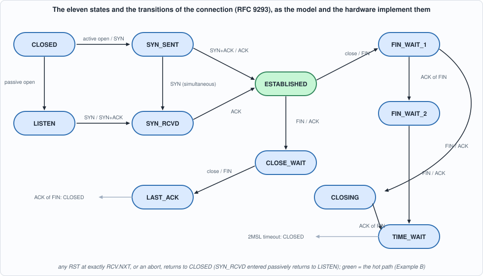
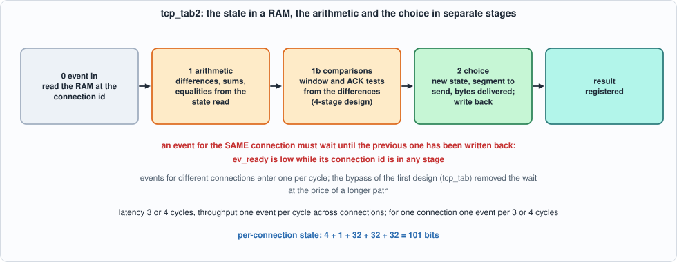
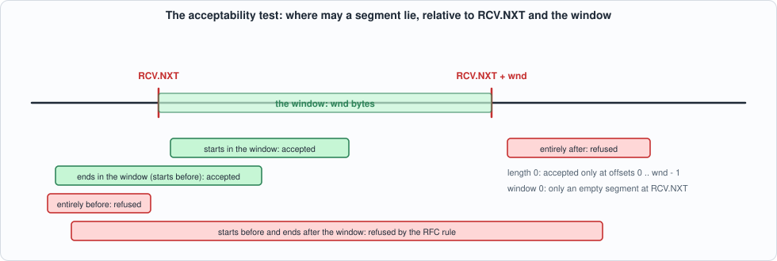
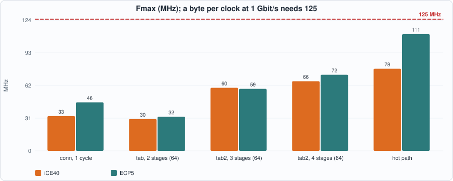
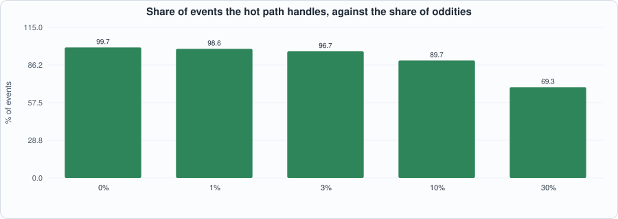

12. The TCP State Machine: Segment Acceptance in Hardware, a Table of Connections, and What Must Be on the Hot Path¶
About the kestrels in this picture
- Seychelles kestrel (Falco araeus) is found on the granitic islands of the Seychelles. It is a small kestrel that hunts lizards and insects in forest and around villages.
- Common kestrel (Falco tinnunculus) ranges across Europe, Asia and Africa. It is famous for hovering: it faces the wind and holds its head almost still while its body adjusts, searching the ground below before it drops onto prey. A much-cited study reported that voles' scent trails reflect ultraviolet light, which kestrels may be able to see.
The scene is imaginary and the birds are stylised drawings.
What you will see: the receive side of TCP as a state machine plus a set of sequence-number checks, first as a Python specification written from RFC 9293 (with the blind-attack rules of RFC 5961), then as hardware: one connection in registers, and then a table of connections in block RAM, one event per cycle for any connection. The chapter finds where the clock goes (the first design runs at 30 MHz), cuts the machine into an arithmetic stage and a choosing stage to double it, measures the price of the missing bypass, and then asks the question of the whole Part: which events must be in hardware at all? The answer, measured on realistic traffic, is a segment-acceptance test that is a tenth of the size of the machine and handles 94% of the events.
What you need to know first: Chapter 6 (golden models, mutation testing) and Chapter 9 (an 8-bit datapath is not the point here: this chapter works on whole segments, as the header filter delivers them). TCP itself is explained as it is needed.
What this chapter builds: rtl/tcp.sv (tcp_next, tcp_conn, tcp_tab, tcp_pre_a, tcp_pre_b, tcp_sel, tcp_tab2, tcp_fast and their pin wrappers), model/tcp_gold.py, tb/tcp_tb.sv, tb/tcp_fast_tb.sv, and tools/ch12_run.py, tools/ch12_example_a.py, tools/ch12_example_b.py, tools/mut_ch12.py.
Scope: what this chapter leaves out, on purpose
No options, no urgent data, no retransmission timer (Chapter 13), no congestion control, no application data to send (only control segments are produced), the peer's window is ignored, the payload of a SYN is ignored, and data is accepted only in order: a segment that does not start at RCV.NXT is acknowledged and its data dropped (no reassembly). The receive window is a constant given with each event. What remains is the state machine (11 states) and the segment checks: the window test, the ACK tests and the reset rules. The segments arrive as fields (flags, sequence number, acknowledgement number, length), as Chapter 9's filter would deliver them; the TCP checksum is Chapter 9's accumulator and is not repeated.
What the machine must decide¶
A TCP connection is described by a few numbers: SND.UNA (the oldest byte we sent that is not yet acknowledged), SND.NXT (the next byte we will send) and RCV.NXT (the next byte we expect), all 32-bit and modular, and one of eleven states. Every event is either an application call (open passively, open actively with an initial sequence number, close, abort), the 2MSL timer expiring, or a segment arriving with its flags (SYN, ACK, FIN, RST), sequence number, acknowledgement number and length. The result of an event is a new state, new values of the three numbers, possibly a segment to send, and a number of bytes delivered to the application.

Figure 12.1: the state machine. Green is the state in which nearly all traffic arrives.The hard part is not the diagram. It is the rule applied before the diagram, to every segment of a synchronised connection:
- Is the segment acceptable? Its bytes must overlap the receive window
[RCV.NXT, RCV.NXT + wnd): its first byte or its last byte lies in it (an empty segment must lie at an offset 0 townd - 1; with a window of 0 only an empty segment atRCV.NXTis acceptable). An unacceptable segment is answered with an ACK (unless it carries a RST) and dropped. - A RST closes the connection only if its sequence number is exactly
RCV.NXT; one elsewhere in the window draws a challenge ACK (RFC 5961: it stops an attacker who can guess a number in the window from killing the connection). A SYN in the window also draws a challenge ACK. - The ACK must lie in
(SND.UNA, SND.NXT]to be new; one for data we have not sent is answered with an ACK and dropped; an old one is ignored. - Only then are data (in order only) and FIN processed, and the state moves.
All the comparisons are modular: x is in [lo, lo + w) when (x - lo) mod 2^32 < w, and a < b when the top bit of a - b is set, so the machine works across the wrap of the sequence space.
The model¶
model/tcp_gold.py is the specification: TCB.event(...) takes one event and returns the segment to send and the bytes delivered, updating the state in place. It carries its scenarios, asserted when run: an active open with sequence numbers across the wrap, a duplicate segment (acknowledged, not delivered twice), our close, FIN_WAIT_2, TIME_WAIT and the 2MSL timeout; a passive open and a blind RST in the window (challenge ACK) followed by the exact RST. It also builds the stimulus: directed lives of a connection (every close path, simultaneous open and close, a reset in each kind of state, the wrap), and state-aware random events: the generator runs the model alongside, so that the segments it makes land on the edges that matter for the state the connection is in (a sequence number at RCV.NXT, one before, the last byte of the window, one past it; an ACK at SND.UNA, SND.NXT and one either side).
#!/usr/bin/env python3
"""Chapter 12: the specification of the TCP connection state machine and its segment checks, written from RFC 9293 section 3.10 (the SEGMENT ARRIVES rules) with the blind-attack mitigations of RFC 5961 (a RST is accepted only at exactly RCV.NXT; a SYN in a synchronised state draws a challenge ACK).
Simplifications, stated so that nothing is hidden: no options, no urgent data, no retransmission timer (Chapter 13), no congestion control, no application data to send (only control segments are produced), data is accepted only IN ORDER (a segment that does not start at RCV.NXT is acknowledged and its data dropped: no reassembly), the payload of a SYN is ignored, the peer's window is ignored, and our receive window is a constant given with each event.
Sequence numbers are 32 bits and every comparison is modular: x is in [lo, lo + w) iff (x - lo) mod 2^32 < w; a < b iff the top bit of (a - b) is set.
An event is one of OPEN_PASSIVE, OPEN_ACTIVE (with an initial sequence number), CLOSE, ABORT, TIMEOUT (the 2MSL timer) or SEGMENT(flags, seq, ack, len). Result of an event: the new state, the segment to send (flags, seq, ack) or None, the number of payload bytes delivered, and the three sequence variables."""
import random
M = 0xFFFFFFFF
CLOSED, LISTEN, SYN_SENT, SYN_RCVD, ESTAB, FW1, FW2, CLOSE_WAIT, CLOSING, LAST_ACK, TIME_WAIT = range(11)
SNAME = ["CLOSED", "LISTEN", "SYN_SENT", "SYN_RCVD", "ESTABLISHED", "FIN_WAIT_1", "FIN_WAIT_2", "CLOSE_WAIT", "CLOSING", "LAST_ACK", "TIME_WAIT"]
SYN, ACK, FIN, RST = 1, 2, 4, 8
E_OPEN_P, E_OPEN_A, E_CLOSE, E_ABORT, E_TIMEOUT, E_SEG = range(6)
ENAME = ["OPEN_PASSIVE", "OPEN_ACTIVE", "CLOSE", "ABORT", "TIMEOUT", "SEGMENT"]
def lt(a, b): return ((a - b) & M) >> 31 == 1
def fl(f): return "".join(c for c, b in (("S", SYN), ("A", ACK), ("F", FIN), ("R", RST)) if f & b) or "-"
class TCB:
def __init__(self): self.state = CLOSED; self.passive = 0; self.una = 0; self.nxt = 0; self.rcv = 0
def snapshot(self): return (self.state, self.passive, self.una, self.nxt, self.rcv)
def _ack_seg(self): return (ACK, self.nxt, self.rcv)
def event(self, e, f=0, seq=0, ack=0, ln=0, wnd=0, iss=0):
"""-> (tx or None, delivered bytes). Updates the state in place."""
seq &= M; ack &= M; tx = None; dlv = 0; st = self.state
if e == E_OPEN_P:
if st == CLOSED: self.state = LISTEN; self.passive = 1; self.una = self.nxt = iss & M
elif e == E_OPEN_A:
if st in (CLOSED, LISTEN):
self.state = SYN_SENT; self.passive = 0; self.una = iss & M; self.nxt = (iss + 1) & M; tx = (SYN, iss & M, 0)
elif e == E_CLOSE:
if st in (LISTEN, SYN_SENT): self.state = CLOSED
elif st in (SYN_RCVD, ESTAB, CLOSE_WAIT):
tx = (FIN | ACK, self.nxt, self.rcv); self.nxt = (self.nxt + 1) & M; self.state = LAST_ACK if st == CLOSE_WAIT else FW1
elif e == E_ABORT:
if st in (SYN_RCVD, ESTAB, FW1, FW2, CLOSE_WAIT): tx = (RST, self.nxt, 0)
if st != CLOSED: self.state = CLOSED
elif e == E_TIMEOUT:
if st == TIME_WAIT: self.state = CLOSED
else: tx, dlv = self._segment(f, seq, ack, ln, wnd)
return tx, dlv
def _segment(self, f, seq, ack, ln, wnd):
s_syn, s_ack, s_fin, s_rst = f & SYN, f & ACK, f & FIN, f & RST; st = self.state; segl = ln + (1 if s_syn else 0) + (1 if s_fin else 0)
if st == CLOSED:
if s_rst: return None, 0
return ((RST, ack & M, 0) if s_ack else (RST | ACK, 0, (seq + segl) & M)), 0
if st == LISTEN:
if s_rst: return None, 0
if s_ack: return (RST, ack & M, 0), 0
if s_syn:
self.rcv = (seq + 1) & M; self.una = self.nxt; iss = self.nxt; self.nxt = (iss + 1) & M; self.state = SYN_RCVD; self.passive = 1
return (SYN | ACK, iss, self.rcv), 0
return None, 0
if st == SYN_SENT:
ack_ok = True
if s_ack:
d = (ack - self.una) & M; dn = (self.nxt - self.una) & M
ack_ok = d != 0 and d <= dn
if not ack_ok: return (None if s_rst else (RST, ack & M, 0)), 0
if s_rst:
if s_ack and ack_ok: self.state = CLOSED
return None, 0
if s_syn:
self.rcv = (seq + 1) & M
if s_ack:
self.una = ack & M; self.state = ESTAB; return (ACK, self.nxt, self.rcv), 0
self.state = SYN_RCVD; self.passive = 0; return (SYN | ACK, self.una, self.rcv), 0
return None, 0
# synchronised states and SYN_RCVD
d = (seq - self.rcv) & M
if segl == 0: ok = (seq == self.rcv) if wnd == 0 else d < wnd
else: ok = False if wnd == 0 else (d < wnd) or (((seq + segl - 1 - self.rcv) & M) < wnd)
if not ok: return (None if s_rst else self._ack_seg()), 0
if s_rst:
if seq == self.rcv:
if st == SYN_RCVD and self.passive: self.state = LISTEN
else: self.state = CLOSED
return None, 0
return self._ack_seg(), 0 # challenge ACK (RFC 5961)
if s_syn: return self._ack_seg(), 0 # challenge ACK
if not s_ack: return None, 0
du = (ack - self.una) & M; dn = (self.nxt - self.una) & M
if st == SYN_RCVD:
if du != 0 and du <= dn: self.state = ESTAB; self.una = ack & M; st = ESTAB
else: return (RST, ack & M, 0), 0
else:
old = lt(ack, self.una)
if not old and du > dn: return self._ack_seg(), 0 # acks something not yet sent
if not old and du != 0: self.una = ack & M
acked = self.una == self.nxt
if st == FW1 and acked: self.state = st = FW2
elif st == CLOSING and acked: self.state = st = TIME_WAIT
elif st == LAST_ACK and acked: self.state = CLOSED; return None, 0
tx = None; dlv = 0
if st in (ESTAB, FW1, FW2):
if ln > 0:
if seq == self.rcv: n = min(ln, wnd); dlv = n; self.rcv = (self.rcv + n) & M; fin_ok = n == ln
else: fin_ok = False # out of order: data dropped
tx = self._ack_seg() # new data or duplicate ACK
else: fin_ok = seq == self.rcv
if s_fin:
if fin_ok:
self.rcv = (self.rcv + 1) & M; tx = self._ack_seg()
self.state = CLOSE_WAIT if st == ESTAB else (TIME_WAIT if st == FW2 else CLOSING)
elif tx is None: tx = self._ack_seg()
elif s_fin: tx = self._ack_seg() # a retransmitted FIN in CLOSE_WAIT, CLOSING, LAST_ACK or TIME_WAIT: acknowledge again
return tx, dlv
def run_events(evs):
"""evs: list of dicts(e, f, seq, ack, ln, wnd, iss, [cid]); returns the list of result tuples for one connection."""
t = TCB(); out = []
for v in evs:
tx, dlv = t.event(v["e"], v.get("f", 0), v.get("seq", 0), v.get("ack", 0), v.get("ln", 0), v.get("wnd", 0), v.get("iss", 0)); out.append((t.state, tx, dlv, t.una, t.nxt, t.rcv, t.passive))
return out
if __name__ == "__main__":
# a hand-checked life: active open, established, we close first, peer closes, time-wait, closed
t = TCB(); ISS = 0xFFFFFFF0; PEER = 5000
tx, _ = t.event(E_OPEN_A, iss=ISS); assert t.state == SYN_SENT and tx == (SYN, ISS, 0)
tx, _ = t.event(E_SEG, SYN | ACK, PEER, (ISS + 1) & M, 0, 1000); assert t.state == ESTAB and tx == (ACK, (ISS + 1) & M, PEER + 1)
tx, d = t.event(E_SEG, ACK, PEER + 1, (ISS + 1) & M, 100, 1000); assert d == 100 and t.rcv == PEER + 101 and tx == (ACK, (ISS + 1) & M, PEER + 101)
tx, d = t.event(E_SEG, ACK, PEER + 1, (ISS + 1) & M, 100, 1000); assert d == 0 and tx == (ACK, (ISS + 1) & M, PEER + 101) # a duplicate: acknowledged, not delivered again
tx, _ = t.event(E_CLOSE); assert t.state == FW1 and tx[0] == FIN | ACK and t.nxt == (ISS + 2) & M
tx, _ = t.event(E_SEG, ACK, PEER + 101, (ISS + 2) & M, 0, 1000); assert t.state == FW2 and tx is None
tx, _ = t.event(E_SEG, FIN | ACK, PEER + 101, (ISS + 2) & M, 0, 1000); assert t.state == TIME_WAIT and tx == (ACK, (ISS + 2) & M, PEER + 102)
t.event(E_TIMEOUT); assert t.state == CLOSED
# passive open and a blind reset: only a RST at exactly RCV.NXT closes the connection
t = TCB(); t.event(E_OPEN_P, iss=77); tx, _ = t.event(E_SEG, SYN, 9, 0, 0, 1000); assert t.state == SYN_RCVD and tx == (SYN | ACK, 77, 10)
t.event(E_SEG, ACK, 10, 78, 0, 1000); assert t.state == ESTAB
tx, _ = t.event(E_SEG, RST, 20, 0, 0, 1000); assert t.state == ESTAB and tx == (ACK, 78, 10) # in window, not exact: challenge ACK
tx, _ = t.event(E_SEG, RST, 10, 0, 0, 1000); assert t.state == CLOSED
# ---- added in Chapter 14: an unacceptable segment is only acknowledged; a second FIN is acknowledged again
t = TCB(); t.event(E_OPEN_A, iss=100); t.event(E_SEG, SYN | ACK, 500, 101, 0, 1000); t.event(E_CLOSE); assert t.state == FW1
tx, d = t.event(E_SEG, ACK, 500 + 1 + 5000, 102, 10, 1000); assert t.state == FW1 and t.una == 101 and tx == (ACK, 102, 501) and d == 0 # out of the window: its ACK field is not looked at
t.event(E_SEG, ACK, 501, 102, 0, 1000); t.event(E_SEG, FIN | ACK, 501, 102, 0, 1000); assert t.state == TIME_WAIT and t.rcv == 502
tx, _ = t.event(E_SEG, FIN | ACK, 502, 102, 0, 1000); assert tx == (ACK, 102, 502) # a further FIN at RCV.NXT: acknowledged again
# ---- end of the Chapter 14 additions
print("tcp_gold hand-checked scenarios passed")
# ---------------------------------------------------------------- stimulus
def seg_near(rng, t, wnd):
"""A segment relative to a connection's state, chosen to land on the edges of every test: the sequence number at RCV.NXT, one before, the last byte of the window, one past it; the ACK at SND.UNA, SND.NXT and one either side."""
seq = (t.rcv + rng.choice([0, 0, 0, -1, 1, wnd - 1, wnd, wnd + 1, -2, rng.randint(0, 3 * max(wnd, 1)), -rng.randint(1, 100), 0x7FFFFFFF, 0x80000000])) & M
ack = (rng.choice([t.nxt, t.nxt, t.una, t.nxt + 1, t.nxt - 1, t.una - 1, t.una + 1, rng.getrandbits(32), t.nxt + rng.randint(2, 50)])) & M
return seq, ack
def gen_events(seed, n, cids=1, wnds=(0, 1, 5, 100, 4096, 65535)):
"""-> list of events (dicts with cid). A model per connection is run alongside so that the segments aimed at its state are well chosen: legitimate handshakes and closes mixed with every kind of wrong segment."""
rng = random.Random(seed); tcb = [TCB() for _ in range(cids)]; evs = []
iss_pool = [0, 1, 0xFFFFFFF0, 0xFFFFFFFF, 0x7FFFFFFF, 0x80000000, 12345]
for _ in range(n):
c = rng.randrange(cids); t = tcb[c]; wnd = rng.choice(wnds)
r = rng.random()
if r < .18:
e = rng.choice([E_OPEN_P, E_OPEN_A, E_OPEN_P, E_OPEN_A, E_CLOSE, E_CLOSE, E_ABORT, E_TIMEOUT, E_TIMEOUT]); v = dict(e=e, iss=rng.choice(iss_pool + [rng.getrandbits(32)]))
else:
seq, ack = seg_near(rng, t, wnd); ln = rng.choice([0, 0, 0, 1, 5, 100, wnd, wnd + 1, 1460, rng.randint(0, 2000)]) & 0xFFFF
st = t.state
if st == SYN_SENT and rng.random() < .6: f = rng.choice([SYN | ACK, SYN | ACK, SYN, RST | ACK, RST, ACK]); ack = (t.nxt if rng.random() < .8 else ack); seq = rng.choice([seq, rng.getrandbits(32)])
elif st == LISTEN and rng.random() < .6: f = rng.choice([SYN, SYN, SYN | ACK, ACK, RST]); seq = rng.getrandbits(32) if rng.random() < .8 else seq
elif st in (CLOSED,): f = rng.choice([SYN, ACK, SYN | ACK, RST, FIN | ACK, ACK | RST]); seq = rng.getrandbits(32)
else: f = rng.choice([ACK, ACK, ACK, ACK, ACK | FIN, ACK | FIN, FIN, SYN, SYN | ACK, RST, RST | ACK, 0, ACK | FIN | SYN, RST | FIN])
if st in (SYN_RCVD, ESTAB, FW1, FW2) and rng.random() < .15: seq = t.rcv; ack = t.nxt if rng.random() < .8 else ack
v = dict(e=E_SEG, f=f, seq=seq, ack=ack, ln=ln, wnd=wnd)
v["cid"] = c; evs.append(v); t.event(v["e"], v.get("f", 0), v.get("seq", 0), v.get("ack", 0), v.get("ln", 0), v.get("wnd", 0), v.get("iss", 0))
return evs
def directed_events(cid=0):
"""Hand-built lives of a connection: every close path, simultaneous open, resets of each kind, a SYN to a LISTEN with an ACK, wraparound of the sequence space."""
ev = []; w = 1000
def add(e, **k): ev.append(dict(e=e, cid=cid, wnd=k.pop("wnd", w), **k))
for iss, peer in ((0xFFFFFF00, 0xFFFFFFF0), (100, 200)):
add(E_OPEN_A, iss=iss); add(E_SEG, f=SYN | ACK, seq=peer, ack=iss + 1); add(E_SEG, f=ACK, seq=peer + 1, ack=iss + 1, ln=300); add(E_SEG, f=ACK | FIN, seq=peer + 301, ack=iss + 1); add(E_CLOSE) # passive close: ESTABLISHED, CLOSE_WAIT, LAST_ACK
add(E_SEG, f=ACK, seq=peer + 302, ack=iss + 2); add(E_OPEN_P, iss=iss); add(E_SEG, f=SYN, seq=peer, ack=0); add(E_SEG, f=ACK, seq=peer + 1, ack=iss + 1); add(E_CLOSE) # active close: FIN_WAIT_1
add(E_SEG, f=FIN | ACK, seq=peer + 1, ack=iss + 1); add(E_SEG, f=ACK, seq=peer + 2, ack=iss + 2); add(E_TIMEOUT) # simultaneous close: CLOSING, TIME_WAIT
add(E_OPEN_A, iss=iss); add(E_SEG, f=SYN, seq=peer, ack=0); add(E_SEG, f=SYN | ACK, seq=peer, ack=iss + 1); add(E_SEG, f=ACK, seq=peer + 1, ack=iss + 1); add(E_ABORT) # simultaneous open
add(E_OPEN_P, iss=iss); add(E_SEG, f=ACK, seq=5, ack=9); add(E_SEG, f=SYN, seq=peer, ack=0); add(E_SEG, f=RST, seq=peer + 1, ack=0); add(E_SEG, f=SYN, seq=peer, ack=0) # reset in SYN_RCVD returns to LISTEN
add(E_SEG, f=ACK, seq=peer + 1, ack=iss + 1); add(E_SEG, f=ACK, seq=peer + 1 + w, ack=iss + 1); add(E_SEG, f=ACK, seq=peer + w, ack=iss + 1, ln=1); add(E_SEG, f=RST, seq=peer + 50, ack=0)
add(E_SEG, f=RST, seq=peer + 1, ack=0); add(E_SEG, f=ACK, seq=1, ack=2); add(E_SEG, f=RST, seq=1)
return ev
def write_events(path, evs, seed=1, idle=15):
rng = random.Random(seed ^ 0x77); lines = []
def junk(): return "%x%x%02x%x%04x%04x%08x%08x%08x" % (0, rng.getrandbits(3), rng.getrandbits(8), rng.getrandbits(4), rng.getrandbits(16), rng.getrandbits(16), rng.getrandbits(32), rng.getrandbits(32), rng.getrandbits(32))
for v in evs:
while rng.randrange(100) < idle: lines.append(junk())
lines.append("%x%x%02x%x%04x%04x%08x%08x%08x" % (1, v["e"], v.get("cid", 0), v.get("f", 0), v.get("ln", 0), v.get("wnd", 0), v.get("seq", 0) & M, v.get("ack", 0) & M, v.get("iss", 0) & M))
with open(path, "w") as f: f.write("\n".join(lines) + "\n")
return len(lines)
def expected_results(evs):
"""-> list of (cid, state, passive, una, nxt, rcv, txv, txflags, txseq, txack, delivered), one per event, connections independent."""
tcb = {}; out = []
for v in evs:
c = v.get("cid", 0); t = tcb.setdefault(c, TCB()); tx, d = t.event(v["e"], v.get("f", 0), v.get("seq", 0), v.get("ack", 0), v.get("ln", 0), v.get("wnd", 0), v.get("iss", 0))
out.append((c, t.state, t.passive, t.una, t.nxt, t.rcv, 1 if tx else 0, tx[0] if tx else 0, tx[1] if tx else 0, tx[2] if tx else 0, d))
return out
def transitions(evs):
"""Coverage: the set of (state before, event class, state after) triples and (state, event class, reaction) seen; an event class of a segment is its flags."""
tcb = {}; tr = set()
for v in evs:
t = tcb.setdefault(v.get("cid", 0), TCB()); s0 = t.state; tx, d = t.event(v["e"], v.get("f", 0), v.get("seq", 0), v.get("ack", 0), v.get("ln", 0), v.get("wnd", 0), v.get("iss", 0))
cls = ENAME[v["e"]] if v["e"] != E_SEG else "SEG " + fl(v.get("f", 0)); tr.add((s0, cls, t.state, tx[0] if tx else -1, d > 0))
return tr
def fast_path(t, f, seq, ack, ln, wnd):
"""The hot path of tcp_fast: True if the segment is handled by it."""
return t.state == ESTAB and f == ACK and seq == t.rcv and ln <= wnd and ((ack - t.una) & M) <= ((t.nxt - t.una) & M)
def realistic_events(seed, conns=8, per_conn=200, p_odd=0.03, wnd=65535):
"""Traffic as a server sees it: each connection is opened by a peer, receives in-order data segments and pure ACKs, with a few percent of oddities (an old duplicate, a gap, a bad ACK, a reset probe), and is closed by FIN; connections are interleaved at random."""
rng = random.Random(seed); tcb = [TCB() for _ in range(conns)]; todo = [per_conn] * conns; evs = []; phase = [0] * conns; peer = [rng.getrandbits(32) for _ in range(conns)]
def add(c, e, **k): v = dict(e=e, cid=c, wnd=wnd, **k); evs.append(v); tcb[c].event(e, k.get("f", 0), k.get("seq", 0), k.get("ack", 0), k.get("ln", 0), wnd, k.get("iss", 0))
live = list(range(conns))
while live:
c = rng.choice(live); t = tcb[c]
if phase[c] == 0: add(c, E_OPEN_P, iss=rng.getrandbits(32)); phase[c] = 1
elif phase[c] == 1: add(c, E_SEG, f=SYN, seq=peer[c], ack=0); phase[c] = 2
elif phase[c] == 2: add(c, E_SEG, f=ACK, seq=(peer[c] + 1) & M, ack=t.nxt); phase[c] = 3
elif phase[c] == 3:
if todo[c] == 0: add(c, E_SEG, f=FIN | ACK, seq=t.rcv, ack=t.nxt); phase[c] = 4; continue
todo[c] -= 1; r = rng.random()
if r < p_odd / 3: add(c, E_SEG, f=ACK, seq=(t.rcv - rng.randint(1, 1460)) & M, ack=t.nxt, ln=rng.randint(1, 1460)) # an old duplicate
elif r < 2 * p_odd / 3: add(c, E_SEG, f=ACK, seq=(t.rcv + rng.randint(1, 3000)) & M, ack=t.nxt, ln=rng.randint(1, 1460)) # a gap
elif r < p_odd: add(c, E_SEG, f=ACK, seq=t.rcv, ack=(t.nxt + rng.randint(1, 100)) & M) # an ACK for something never sent
elif r < 0.55: add(c, E_SEG, f=ACK, seq=t.rcv, ack=t.nxt, ln=rng.choice([1460, 1460, 1460, 536, rng.randint(1, 1460)])) # data
else: add(c, E_SEG, f=ACK, seq=t.rcv, ack=t.nxt) # a pure ACK
elif phase[c] == 4: add(c, E_CLOSE); phase[c] = 5
elif phase[c] == 5: add(c, E_SEG, f=ACK, seq=t.rcv, ack=t.nxt); phase[c] = 6
else: add(c, E_TIMEOUT); live.remove(c)
return evs
def fast_random_cases(seed, n):
"""Uniformly random connection states (mostly ESTABLISHED, with data outstanding half the time) and segments aimed at them, for the hot path: [(snapshot, event)]."""
rng = random.Random(seed); cases = []
for _ in range(n):
t = TCB(); t.state = ESTAB if rng.random() < .8 else rng.randrange(11); t.una = rng.getrandbits(32); t.nxt = (t.una + rng.choice([0, 0, 1, 5, 1000])) & M; t.rcv = rng.getrandbits(32)
v = dict(e=E_SEG, f=rng.choice([ACK, ACK, ACK, ACK | FIN, SYN, 0]), seq=rng.choice([t.rcv, t.rcv, (t.rcv + 1) & M, rng.getrandbits(32)]), ack=rng.choice([t.nxt, t.una, (t.nxt + 1) & M, (t.una - 1) & M, rng.getrandbits(32)]), ln=rng.choice([0, 1, 100, 1460]), wnd=rng.choice([0, 100, 1460, 65535])); cases.append((t.snapshot(), v))
return cases
The first design: the whole machine in one cycle¶
tcp_next is the machine as a combinational function: the state variables and the event in, the new variables, the segment to send and the bytes delivered out. tcp_conn wraps it with registers: one connection, one event per cycle, the result in the next. tcp_tab keeps 2^CIDW connections in a RAM (101 bits each): in cycle 0 the event arrives and the RAM is read, in cycle 1 tcp_next runs on what was read and the result is written back; an event that arrives while the previous event's result is being written to the same connection would read the old state, so the new state is also kept in a bypass register and used instead. After a reset the RAM is cleared, one word per cycle.
The second design: arithmetic and choice in separate stages¶
The first design runs at 33 MHz on iCE40 and 46 on ECP5 (one connection) and 30 and 32 with the table (Example A); a byte per clock at 1 Gbit/s needs 125. The critical path (nextpnr) runs from the RAM output through 32-bit subtractions, a comparison, the priority of the rules and the segment mux. The cure is the one of Chapter 9: separate the arithmetic from the choice.
tcp_pre_adoes all the 32-bit arithmetic in parallel from registered values: the differences (seq - RCV.NXT, the last byte's difference,ack - SND.UNA,SND.NXT - SND.UNA), the sums that the answers will need (seq + 1,seqplus the segment length,RCV.NXT + 1, plus the length, plus the length and 1, plus the window,SND.NXT + 1,ISS + 1), and the equalities.tcp_pre_bturns the differences into one-bit predicates: acceptable, ACK new, ACK old, ACK for the future, and so on.tcp_selonly chooses: it is the same priority of rules, but over flags and one-bit predicates, with every value it can need already computed.
tcp_tab2 puts a register between these: three stages (arithmetic and comparisons together, then the choice) or four (the arithmetic, the comparisons, the choice). The price: there is no bypass, so an event for a connection must wait until the previous event for the same connection has been written back (ev_ready low while its connection id is in any stage): events for one connection are accepted 3 or 4 cycles apart, events for different connections one per cycle.

Figure 12.2: stages oftcp_tab2.
// verilator lint_off DECLFILENAME
// verilator lint_off UNUSEDSIGNAL
// Chapter 12: the TCP connection state machine and its segment checks (RFC 9293 section 3.10 with the RFC 5961 mitigations), as hardware. The behaviour, and every simplification, is that of model/tcp_gold.py.
// tcp_next : the whole machine as a combinational function: (state variables, event) -> (new state variables, segment to send, bytes delivered).
// tcp_conn : one connection in registers: one event per cycle, the result in the next cycle.
// tcp_tab : N connections in a RAM, one event per cycle for any connection, result two cycles later; a read-modify-write pipeline with forwarding for back-to-back events of the same connection.
// Event types: 0 OPEN_PASSIVE, 1 OPEN_ACTIVE (iss), 2 CLOSE, 3 ABORT, 4 TIMEOUT (2MSL), 5 SEGMENT (flags: bit 0 SYN, 1 ACK, 2 FIN, 3 RST; seq, ack, len, wnd = our receive window). States: 0 CLOSED, 1 LISTEN, 2 SYN_SENT, 3 SYN_RCVD, 4 ESTABLISHED, 5 FIN_WAIT_1, 6 FIN_WAIT_2, 7 CLOSE_WAIT, 8 CLOSING, 9 LAST_ACK, 10 TIME_WAIT.
module tcp_next (
input logic [3:0] st, input logic pas, input logic [31:0] una, input logic [31:0] nxt, input logic [31:0] rcv,
input logic [2:0] e, input logic [3:0] f, input logic [31:0] seq, input logic [31:0] ack, input logic [15:0] ln, input logic [15:0] wnd, input logic [31:0] iss,
output logic [3:0] n_st, output logic n_pas, output logic [31:0] n_una, output logic [31:0] n_nxt, output logic [31:0] n_rcv,
output logic tx_v, output logic [3:0] tx_f, output logic [31:0] tx_seq, output logic [31:0] tx_ack, output logic [15:0] dlv);
localparam logic [3:0] CLOSED = 4'd0, LISTEN = 4'd1, SYN_SENT = 4'd2, SYN_RCVD = 4'd3, ESTAB = 4'd4, FW1 = 4'd5, FW2 = 4'd6, CLOSE_WAIT = 4'd7, CLOSING = 4'd8, LAST_ACK = 4'd9, TIME_WAIT = 4'd10;
localparam logic [3:0] SYN = 4'd1, ACK = 4'd2, FIN = 4'd4, RST = 4'd8;
logic s_syn, s_ack, s_fin, s_rst; logic [16:0] segl; logic [31:0] d_seq, d_end, du, dn, una2, rcv2; logic ack_in, ack_old, acc_ok, stop, acked, fin_ok; logic [3:0] st2; logic [15:0] nn;
always_comb begin
n_st = st; n_pas = pas; n_una = una; n_nxt = nxt; n_rcv = rcv; tx_v = 1'b0; tx_f = 4'd0; tx_seq = 32'd0; tx_ack = 32'd0; dlv = 16'd0;
s_syn = f[0]; s_ack = f[1]; s_fin = f[2]; s_rst = f[3];
segl = {1'b0, ln} + {16'd0, s_syn} + {16'd0, s_fin};
d_seq = seq - rcv; d_end = seq + {15'd0, segl} - 32'd1 - rcv; du = ack - una; dn = nxt - una;
ack_in = (du != 32'd0) && (du <= dn); ack_old = du[31];
acc_ok = (segl == 17'd0) ? ((wnd == 16'd0) ? (seq == rcv) : (d_seq < {16'd0, wnd})) : ((wnd == 16'd0) ? 1'b0 : ((d_seq < {16'd0, wnd}) || (d_end < {16'd0, wnd})));
una2 = una; rcv2 = rcv; st2 = st; stop = 1'b0; acked = 1'b0; fin_ok = 1'b1; nn = 16'd0;
case (e)
3'd0: if (st == CLOSED) begin n_st = LISTEN; n_pas = 1'b1; n_una = iss; n_nxt = iss; end
3'd1: if (st == CLOSED || st == LISTEN) begin n_st = SYN_SENT; n_pas = 1'b0; n_una = iss; n_nxt = iss + 32'd1; tx_v = 1'b1; tx_f = SYN; tx_seq = iss; end
3'd2: begin
if (st == LISTEN || st == SYN_SENT) n_st = CLOSED;
else if (st == SYN_RCVD || st == ESTAB || st == CLOSE_WAIT) begin tx_v = 1'b1; tx_f = FIN | ACK; tx_seq = nxt; tx_ack = rcv; n_nxt = nxt + 32'd1; n_st = (st == CLOSE_WAIT) ? LAST_ACK : FW1; end
end
3'd3: begin
if (st == SYN_RCVD || st == ESTAB || st == FW1 || st == FW2 || st == CLOSE_WAIT) begin tx_v = 1'b1; tx_f = RST; tx_seq = nxt; end
n_st = CLOSED;
end
3'd4: if (st == TIME_WAIT) n_st = CLOSED;
default: begin
if (st == CLOSED) begin
if (!s_rst) begin
tx_v = 1'b1;
if (s_ack) begin tx_f = RST; tx_seq = ack; end else begin tx_f = RST | ACK; tx_seq = 32'd0; tx_ack = seq + {15'd0, segl}; end
end
end else if (st == LISTEN) begin
if (s_rst) begin end
else if (s_ack) begin tx_v = 1'b1; tx_f = RST; tx_seq = ack; end
else if (s_syn) begin n_rcv = seq + 32'd1; n_una = nxt; n_nxt = nxt + 32'd1; n_st = SYN_RCVD; n_pas = 1'b1; tx_v = 1'b1; tx_f = SYN | ACK; tx_seq = nxt; tx_ack = seq + 32'd1; end
end else if (st == SYN_SENT) begin
if (s_ack && !ack_in) begin if (!s_rst) begin tx_v = 1'b1; tx_f = RST; tx_seq = ack; end end
else if (s_rst) begin if (s_ack) n_st = CLOSED; end
else if (s_syn) begin
n_rcv = seq + 32'd1;
if (s_ack) begin n_una = ack; n_st = ESTAB; tx_v = 1'b1; tx_f = ACK; tx_seq = nxt; tx_ack = seq + 32'd1; end
else begin n_st = SYN_RCVD; n_pas = 1'b0; tx_v = 1'b1; tx_f = SYN | ACK; tx_seq = una; tx_ack = seq + 32'd1; end
end
end else begin
if (!acc_ok) begin if (!s_rst) begin tx_v = 1'b1; tx_f = ACK; tx_seq = nxt; tx_ack = rcv; end end
else if (s_rst) begin
if (seq == rcv) n_st = (st == SYN_RCVD && pas) ? LISTEN : CLOSED;
else begin tx_v = 1'b1; tx_f = ACK; tx_seq = nxt; tx_ack = rcv; end
end
else if (s_syn) begin tx_v = 1'b1; tx_f = ACK; tx_seq = nxt; tx_ack = rcv; end
else if (s_ack) begin
if (st == SYN_RCVD) begin
if (ack_in) begin st2 = ESTAB; una2 = ack; end else begin tx_v = 1'b1; tx_f = RST; tx_seq = ack; stop = 1'b1; end
end else begin
if (!ack_old && du > dn) begin tx_v = 1'b1; tx_f = ACK; tx_seq = nxt; tx_ack = rcv; stop = 1'b1; end
else if (!ack_old && du != 32'd0) una2 = ack;
end
if (!stop) begin
acked = (una2 == nxt);
if (st2 == FW1 && acked) st2 = FW2; else if (st2 == CLOSING && acked) st2 = TIME_WAIT; else if (st2 == LAST_ACK && acked) begin st2 = CLOSED; stop = 1'b1; end
n_una = una2; n_st = st2;
if (!stop) begin
if (st2 == ESTAB || st2 == FW1 || st2 == FW2) begin
if (ln != 16'd0) begin
if (seq == rcv) begin nn = (ln < wnd) ? ln : wnd; dlv = nn; rcv2 = rcv + {16'd0, nn}; fin_ok = (nn == ln); end else fin_ok = 1'b0;
n_rcv = rcv2; tx_v = 1'b1; tx_f = ACK; tx_seq = nxt; tx_ack = rcv2;
end else fin_ok = (seq == rcv);
if (s_fin) begin
if (fin_ok) begin
rcv2 = rcv2 + 32'd1; n_rcv = rcv2; tx_v = 1'b1; tx_f = ACK; tx_seq = nxt; tx_ack = rcv2;
n_st = (st2 == ESTAB) ? CLOSE_WAIT : ((st2 == FW2) ? TIME_WAIT : CLOSING);
end else if (!tx_v) begin tx_v = 1'b1; tx_f = ACK; tx_seq = nxt; tx_ack = rcv; end
end
end else if (s_fin) begin tx_v = 1'b1; tx_f = ACK; tx_seq = nxt; tx_ack = rcv; end
end
end
end
end
end
endcase
end
endmodule
// tcp_conn: one connection. ev_valid with the event; the result (state, segment to send, bytes delivered, the three sequence variables) is registered and valid in the next cycle (r_valid).
module tcp_conn (
input logic clk, input logic rst,
input logic ev_valid, input logic [2:0] ev_type, input logic [3:0] ev_f, input logic [31:0] ev_seq, input logic [31:0] ev_ack, input logic [15:0] ev_len, input logic [15:0] ev_wnd, input logic [31:0] ev_iss,
output logic r_valid, output logic [3:0] r_st, output logic r_pas, output logic [31:0] r_una, output logic [31:0] r_nxt, output logic [31:0] r_rcv, output logic r_txv, output logic [3:0] r_txf, output logic [31:0] r_txseq, output logic [31:0] r_txack, output logic [15:0] r_dlv);
logic [3:0] st, n_st; logic pas, n_pas; logic [31:0] una, nxt, rcv, n_una, n_nxt, n_rcv, tx_seq, tx_ack; logic tx_v; logic [3:0] tx_f; logic [15:0] dlv;
tcp_next nx (.st(st), .pas(pas), .una(una), .nxt(nxt), .rcv(rcv), .e(ev_type), .f(ev_f), .seq(ev_seq), .ack(ev_ack), .ln(ev_len), .wnd(ev_wnd), .iss(ev_iss),
.n_st(n_st), .n_pas(n_pas), .n_una(n_una), .n_nxt(n_nxt), .n_rcv(n_rcv), .tx_v(tx_v), .tx_f(tx_f), .tx_seq(tx_seq), .tx_ack(tx_ack), .dlv(dlv));
always_ff @(posedge clk) begin
r_valid <= ev_valid && !rst;
if (rst) begin st <= 4'd0; pas <= 1'b0; una <= 32'd0; nxt <= 32'd0; rcv <= 32'd0; end
else if (ev_valid) begin
st <= n_st; pas <= n_pas; una <= n_una; nxt <= n_nxt; rcv <= n_rcv;
r_st <= n_st; r_pas <= n_pas; r_una <= n_una; r_nxt <= n_nxt; r_rcv <= n_rcv; r_txv <= tx_v; r_txf <= tx_f; r_txseq <= tx_seq; r_txack <= tx_ack; r_dlv <= dlv;
end
end
endmodule
// tcp_tab: 2^CIDW connections whose state (4 + 1 + 3 x 32 = 101 bits each) lives in a RAM. One event per cycle for ANY connection. Cycle 0: the event arrives and the RAM is read; cycle 1: tcp_next runs on what was read and the result is written back and registered. An event that arrives in the cycle in which the previous event's result is being written to the SAME connection would read the old state, so the new state is also kept in a bypass register and used instead (fwd_r). After reset the RAM is cleared, one word per cycle: ev_ready is low until then.
module tcp_tab #(parameter int CIDW = 4) (
input logic clk, input logic rst, output logic ev_ready,
input logic ev_valid, input logic [CIDW-1:0] ev_cid, input logic [2:0] ev_type, input logic [3:0] ev_f, input logic [31:0] ev_seq, input logic [31:0] ev_ack, input logic [15:0] ev_len, input logic [15:0] ev_wnd, input logic [31:0] ev_iss,
output logic r_valid, output logic [CIDW-1:0] r_cid, output logic [3:0] r_st, output logic r_pas, output logic [31:0] r_una, output logic [31:0] r_nxt, output logic [31:0] r_rcv, output logic r_txv, output logic [3:0] r_txf, output logic [31:0] r_txseq, output logic [31:0] r_txack, output logic [15:0] r_dlv);
localparam int W = 101;
logic [W-1:0] mem [0:(1 << CIDW) - 1]; logic [W-1:0] mem_q, fwd_d, sv, nvec; logic fwd_r, v1; logic [CIDW:0] ic; logic initing;
logic [CIDW-1:0] cid1; logic [2:0] t1; logic [3:0] f1; logic [31:0] seq1, ack1, iss1; logic [15:0] len1, wnd1;
logic [3:0] n_st; logic n_pas; logic [31:0] n_una, n_nxt, n_rcv, tx_seq, tx_ack; logic tx_v; logic [3:0] tx_f; logic [15:0] dlv;
assign initing = !ic[CIDW]; assign ev_ready = !initing;
assign sv = fwd_r ? fwd_d : mem_q;
tcp_next nx (.st(sv[100:97]), .pas(sv[96]), .una(sv[95:64]), .nxt(sv[63:32]), .rcv(sv[31:0]), .e(t1), .f(f1), .seq(seq1), .ack(ack1), .ln(len1), .wnd(wnd1), .iss(iss1),
.n_st(n_st), .n_pas(n_pas), .n_una(n_una), .n_nxt(n_nxt), .n_rcv(n_rcv), .tx_v(tx_v), .tx_f(tx_f), .tx_seq(tx_seq), .tx_ack(tx_ack), .dlv(dlv));
assign nvec = {n_st, n_pas, n_una, n_nxt, n_rcv};
logic take; assign take = ev_valid && ev_ready;
always_ff @(posedge clk) begin
if (rst) ic <= '0; else if (initing) ic <= ic + 1'b1;
if (initing) mem[ic[CIDW-1:0]] <= '0; else if (v1) mem[cid1] <= nvec;
mem_q <= mem[ev_cid];
fwd_r <= take && v1 && (ev_cid == cid1); fwd_d <= nvec;
v1 <= take && !rst; cid1 <= ev_cid; t1 <= ev_type; f1 <= ev_f; seq1 <= ev_seq; ack1 <= ev_ack; iss1 <= ev_iss; len1 <= ev_len; wnd1 <= ev_wnd;
r_valid <= v1 && !rst; r_cid <= cid1; r_st <= n_st; r_pas <= n_pas; r_una <= n_una; r_nxt <= n_nxt; r_rcv <= n_rcv; r_txv <= tx_v; r_txf <= tx_f; r_txseq <= tx_seq; r_txack <= tx_ack; r_dlv <= dlv;
end
endmodule
// ---------------------------------------------------------------------------------------------------------------
// The second design: the same machine cut in two so that it can be pipelined. tcp_pre does ALL the arithmetic (32-bit comparisons and additions, in parallel, from registered values); tcp_sel only chooses (flags and one-bit predicates in, state and segment out). tcp_tab2 puts a register between them.
// P bits: 0 seq == rcv, 1 acceptable, 2 una < ack <= nxt, 3 ack < una, 4 ack > nxt, 5 ack == nxt, 6 una == nxt, 7 len != 0, 8 len <= wnd
// S words: 0 seq + 1, 1 seq + segment length, 2 rcv + 1, 3 rcv + len, 4 rcv + len + 1, 5 rcv + wnd, 6 nxt + 1, 7 iss + 1
// tcp_pre_a: the arithmetic (differences and sums, in parallel from registered values) and the equalities. tcp_pre_b: the comparisons of the differences. tcp_pre = both, in one cycle.
module tcp_pre_a (
input logic [31:0] una, input logic [31:0] nxt, input logic [31:0] rcv, input logic [3:0] f, input logic [31:0] seq, input logic [31:0] ack, input logic [15:0] ln, input logic [15:0] wnd, input logic [31:0] iss,
output logic [127:0] D, output logic [6:0] E, output logic [255:0] S);
logic [16:0] segl;
always_comb begin
segl = {1'b0, ln} + {16'd0, f[0]} + {16'd0, f[2]};
D = {ack - una, nxt - una, seq + {15'd0, segl} - 32'd1 - rcv, seq - rcv};
E = {(wnd == 16'd0), (segl == 17'd0), (ln <= wnd), (ln != 16'd0), (una == nxt), (ack == nxt), (seq == rcv)};
S = {iss + 32'd1, nxt + 32'd1, rcv + {16'd0, wnd}, rcv + {16'd0, ln} + 32'd1, rcv + {16'd0, ln}, rcv + 32'd1, seq + {15'd0, segl}, seq + 32'd1};
end
endmodule
module tcp_pre_b (input logic [127:0] D, input logic [6:0] E, input logic [15:0] wnd, output logic [8:0] P);
logic [31:0] d_seq, d_end, dn, du; logic ack_in, acc_ok;
always_comb begin
{du, dn, d_end, d_seq} = D;
ack_in = (du != 32'd0) && (du <= dn);
acc_ok = E[5] ? (E[6] ? E[0] : (d_seq < {16'd0, wnd})) : (E[6] ? 1'b0 : ((d_seq < {16'd0, wnd}) || (d_end < {16'd0, wnd})));
P = {E[4], E[3], E[2], E[1], (!du[31] && du > dn), du[31], ack_in, acc_ok, E[0]};
end
endmodule
module tcp_sel (
input logic [3:0] st, input logic pas, input logic [31:0] una, input logic [31:0] nxt, input logic [31:0] rcv,
input logic [2:0] e, input logic [3:0] f, input logic [31:0] seq, input logic [31:0] ack, input logic [15:0] ln, input logic [15:0] wnd, input logic [31:0] iss, input logic [8:0] P, input logic [255:0] S,
output logic [3:0] n_st, output logic n_pas, output logic [31:0] n_una, output logic [31:0] n_nxt, output logic [31:0] n_rcv,
output logic tx_v, output logic [3:0] tx_f, output logic [31:0] tx_seq, output logic [31:0] tx_ack, output logic [15:0] dlv);
localparam logic [3:0] CLOSED = 4'd0, LISTEN = 4'd1, SYN_SENT = 4'd2, SYN_RCVD = 4'd3, ESTAB = 4'd4, FW1 = 4'd5, FW2 = 4'd6, CLOSE_WAIT = 4'd7, CLOSING = 4'd8, LAST_ACK = 4'd9, TIME_WAIT = 4'd10;
localparam logic [3:0] SYN = 4'd1, ACK = 4'd2, FIN = 4'd4, RST = 4'd8;
logic s_syn, s_ack, s_fin, s_rst, seq_eq, acc_ok, ack_in, ack_old, ack_fut, ack_eq, una_eq, ln_nz, ln_le; logic [31:0] seq_p1, seq_pseg, rcv_p1, rcv_pln, rcv_pln1, rcv_pwnd, nxt_p1, iss_p1;
logic [31:0] rcv2; logic [3:0] st2; logic stop, acked, fin_ok, una_upd;
always_comb begin
{ln_le, ln_nz, una_eq, ack_eq, ack_fut, ack_old, ack_in, acc_ok, seq_eq} = P;
{iss_p1, nxt_p1, rcv_pwnd, rcv_pln1, rcv_pln, rcv_p1, seq_pseg, seq_p1} = S;
s_syn = f[0]; s_ack = f[1]; s_fin = f[2]; s_rst = f[3];
n_st = st; n_pas = pas; n_una = una; n_nxt = nxt; n_rcv = rcv; tx_v = 1'b0; tx_f = 4'd0; tx_seq = 32'd0; tx_ack = 32'd0; dlv = 16'd0;
rcv2 = rcv; st2 = st; stop = 1'b0; acked = 1'b0; fin_ok = 1'b1; una_upd = 1'b0;
case (e)
3'd0: if (st == CLOSED) begin n_st = LISTEN; n_pas = 1'b1; n_una = iss; n_nxt = iss; end
3'd1: if (st == CLOSED || st == LISTEN) begin n_st = SYN_SENT; n_pas = 1'b0; n_una = iss; n_nxt = iss_p1; tx_v = 1'b1; tx_f = SYN; tx_seq = iss; end
3'd2: begin
if (st == LISTEN || st == SYN_SENT) n_st = CLOSED;
else if (st == SYN_RCVD || st == ESTAB || st == CLOSE_WAIT) begin tx_v = 1'b1; tx_f = FIN | ACK; tx_seq = nxt; tx_ack = rcv; n_nxt = nxt_p1; n_st = (st == CLOSE_WAIT) ? LAST_ACK : FW1; end
end
3'd3: begin
if (st == SYN_RCVD || st == ESTAB || st == FW1 || st == FW2 || st == CLOSE_WAIT) begin tx_v = 1'b1; tx_f = RST; tx_seq = nxt; end
n_st = CLOSED;
end
3'd4: if (st == TIME_WAIT) n_st = CLOSED;
default: begin
if (st == CLOSED) begin
if (!s_rst) begin
tx_v = 1'b1;
if (s_ack) begin tx_f = RST; tx_seq = ack; end else begin tx_f = RST | ACK; tx_seq = 32'd0; tx_ack = seq_pseg; end
end
end else if (st == LISTEN) begin
if (s_rst) begin end
else if (s_ack) begin tx_v = 1'b1; tx_f = RST; tx_seq = ack; end
else if (s_syn) begin n_rcv = seq_p1; n_una = nxt; n_nxt = nxt_p1; n_st = SYN_RCVD; n_pas = 1'b1; tx_v = 1'b1; tx_f = SYN | ACK; tx_seq = nxt; tx_ack = seq_p1; end
end else if (st == SYN_SENT) begin
if (s_ack && !ack_in) begin if (!s_rst) begin tx_v = 1'b1; tx_f = RST; tx_seq = ack; end end
else if (s_rst) begin if (s_ack) n_st = CLOSED; end
else if (s_syn) begin
n_rcv = seq_p1;
if (s_ack) begin n_una = ack; n_st = ESTAB; tx_v = 1'b1; tx_f = ACK; tx_seq = nxt; tx_ack = seq_p1; end
else begin n_st = SYN_RCVD; n_pas = 1'b0; tx_v = 1'b1; tx_f = SYN | ACK; tx_seq = una; tx_ack = seq_p1; end
end
end else begin
if (!acc_ok) begin if (!s_rst) begin tx_v = 1'b1; tx_f = ACK; tx_seq = nxt; tx_ack = rcv; end end
else if (s_rst) begin
if (seq_eq) n_st = (st == SYN_RCVD && pas) ? LISTEN : CLOSED;
else begin tx_v = 1'b1; tx_f = ACK; tx_seq = nxt; tx_ack = rcv; end
end
else if (s_syn) begin tx_v = 1'b1; tx_f = ACK; tx_seq = nxt; tx_ack = rcv; end
else if (s_ack) begin
if (st == SYN_RCVD) begin
if (ack_in) begin st2 = ESTAB; una_upd = 1'b1; end else begin tx_v = 1'b1; tx_f = RST; tx_seq = ack; stop = 1'b1; end
end else begin
if (ack_fut) begin tx_v = 1'b1; tx_f = ACK; tx_seq = nxt; tx_ack = rcv; stop = 1'b1; end
else if (ack_in) una_upd = 1'b1;
end
if (!stop) begin
acked = una_upd ? ack_eq : una_eq;
if (st2 == FW1 && acked) st2 = FW2; else if (st2 == CLOSING && acked) st2 = TIME_WAIT; else if (st2 == LAST_ACK && acked) begin st2 = CLOSED; stop = 1'b1; end
if (una_upd) n_una = ack;
n_st = st2;
if (!stop) begin
if (st2 == ESTAB || st2 == FW1 || st2 == FW2) begin
if (ln_nz) begin
if (seq_eq) begin dlv = ln_le ? ln : wnd; rcv2 = ln_le ? rcv_pln : rcv_pwnd; fin_ok = ln_le; end else fin_ok = 1'b0;
n_rcv = rcv2; tx_v = 1'b1; tx_f = ACK; tx_seq = nxt; tx_ack = rcv2;
end else fin_ok = seq_eq;
if (s_fin) begin
if (fin_ok) begin
rcv2 = ln_nz ? rcv_pln1 : rcv_p1; n_rcv = rcv2; tx_v = 1'b1; tx_f = ACK; tx_seq = nxt; tx_ack = rcv2;
n_st = (st2 == ESTAB) ? CLOSE_WAIT : ((st2 == FW2) ? TIME_WAIT : CLOSING);
end else if (!tx_v) begin tx_v = 1'b1; tx_f = ACK; tx_seq = nxt; tx_ack = rcv; end
end
end else if (s_fin) begin tx_v = 1'b1; tx_f = ACK; tx_seq = nxt; tx_ack = rcv; end
end
end
end
end
end
endcase
end
endmodule
// tcp_tab2 (SPLIT = 0): 2^CIDW connections, three stages: (0) the event arrives and the RAM is read; (1) tcp_pre computes every comparison and sum from the state read and the event, and registers them; (2) tcp_sel chooses the new state and the segment, the new state is written back and the result registered. Result in the third cycle. With SPLIT = 1 the arithmetic and the comparisons are two stages (four in all, result in the fourth cycle). A second event for the SAME connection must wait until the first has been written: ev_ready is low while an event for ev_cid is in any stage (there is no bypass), so events for one connection are accepted at least 3 (SPLIT = 0) or 4 (SPLIT = 1) cycles apart; events for different connections one per cycle. After reset the RAM is cleared.
module tcp_tab2 #(parameter int CIDW = 4, parameter int SPLIT = 0) (
input logic clk, input logic rst, output logic ev_ready,
input logic ev_valid, input logic [CIDW-1:0] ev_cid, input logic [2:0] ev_type, input logic [3:0] ev_f, input logic [31:0] ev_seq, input logic [31:0] ev_ack, input logic [15:0] ev_len, input logic [15:0] ev_wnd, input logic [31:0] ev_iss,
output logic r_valid, output logic [CIDW-1:0] r_cid, output logic [3:0] r_st, output logic r_pas, output logic [31:0] r_una, output logic [31:0] r_nxt, output logic [31:0] r_rcv, output logic r_txv, output logic [3:0] r_txf, output logic [31:0] r_txseq, output logic [31:0] r_txack, output logic [15:0] r_dlv);
localparam int W = 101;
logic [W-1:0] mem [0:(1 << CIDW) - 1]; logic [W-1:0] mem_q, sv1, sv2, nvec; logic v1, vb, v2; logic [CIDW:0] ic; logic initing;
logic [CIDW-1:0] cid1, cidb, cid2; logic [2:0] t1, tb, t2; logic [3:0] f1, fb, f2; logic [31:0] seq1, ack1, iss1, seqb, ackb, issb, seq2, ack2, iss2; logic [15:0] len1, wnd1, lenb, wndb, len2, wnd2;
logic [127:0] D1, Db; logic [6:0] E1, Eb; logic [255:0] S1, Sb, S2; logic [8:0] P2, Pw; logic [W-1:0] svb;
logic [3:0] n_st; logic n_pas; logic [31:0] n_una, n_nxt, n_rcv, tx_seq, tx_ack; logic tx_v; logic [3:0] tx_f; logic [15:0] dlv;
assign initing = !ic[CIDW];
assign ev_ready = !initing && !(v1 && cid1 == ev_cid) && !(vb && cidb == ev_cid && SPLIT != 0) && !(v2 && cid2 == ev_cid);
tcp_pre_a pa (.una(mem_q[95:64]), .nxt(mem_q[63:32]), .rcv(mem_q[31:0]), .f(f1), .seq(seq1), .ack(ack1), .ln(len1), .wnd(wnd1), .iss(iss1), .D(D1), .E(E1), .S(S1));
// the comparisons: in the same stage (SPLIT = 0) or one stage later (SPLIT = 1)
logic [127:0] Dc; logic [6:0] Ec; logic [15:0] wc; logic [8:0] Pc;
assign Dc = (SPLIT != 0) ? Db : D1; assign Ec = (SPLIT != 0) ? Eb : E1; assign wc = (SPLIT != 0) ? wndb : wnd1;
tcp_pre_b pb (.D(Dc), .E(Ec), .wnd(wc), .P(Pc));
tcp_sel sel (.st(sv2[100:97]), .pas(sv2[96]), .una(sv2[95:64]), .nxt(sv2[63:32]), .rcv(sv2[31:0]), .e(t2), .f(f2), .seq(seq2), .ack(ack2), .ln(len2), .wnd(wnd2), .iss(iss2), .P(P2), .S(S2),
.n_st(n_st), .n_pas(n_pas), .n_una(n_una), .n_nxt(n_nxt), .n_rcv(n_rcv), .tx_v(tx_v), .tx_f(tx_f), .tx_seq(tx_seq), .tx_ack(tx_ack), .dlv(dlv));
assign nvec = {n_st, n_pas, n_una, n_nxt, n_rcv};
logic take; assign take = ev_valid && ev_ready;
always_ff @(posedge clk) begin
if (rst) ic <= '0; else if (initing) ic <= ic + 1'b1;
if (initing) mem[ic[CIDW-1:0]] <= '0; else if (v2) mem[cid2] <= nvec;
mem_q <= mem[ev_cid];
v1 <= take && !rst; cid1 <= ev_cid; t1 <= ev_type; f1 <= ev_f; seq1 <= ev_seq; ack1 <= ev_ack; iss1 <= ev_iss; len1 <= ev_len; wnd1 <= ev_wnd;
// stage b (used when SPLIT = 1): the arithmetic registered
vb <= v1 && !rst; cidb <= cid1; svb <= mem_q; tb <= t1; fb <= f1; seqb <= seq1; ackb <= ack1; issb <= iss1; lenb <= len1; wndb <= wnd1; Db <= D1; Eb <= E1; Sb <= S1;
// stage 2: the predicates registered
if (SPLIT != 0) begin v2 <= vb && !rst; cid2 <= cidb; sv2 <= svb; t2 <= tb; f2 <= fb; seq2 <= seqb; ack2 <= ackb; iss2 <= issb; len2 <= lenb; wnd2 <= wndb; S2 <= Sb; end
else begin v2 <= v1 && !rst; cid2 <= cid1; sv2 <= mem_q; t2 <= t1; f2 <= f1; seq2 <= seq1; ack2 <= ack1; iss2 <= iss1; len2 <= len1; wnd2 <= wnd1; S2 <= S1; end
P2 <= Pc;
r_valid <= v2 && !rst; r_cid <= cid2; r_st <= n_st; r_pas <= n_pas; r_una <= n_una; r_nxt <= n_nxt; r_rcv <= n_rcv; r_txv <= tx_v; r_txf <= tx_f; r_txseq <= tx_seq; r_txack <= tx_ack; r_dlv <= dlv;
end
endmodule
// tcp_conn_syn and tcp_tab_syn: the same designs behind a handful of pins, ONLY so that they fit a chip for the place-and-route runs. The 148-bit event is shifted in serially; the result leaves through one registered 16-bit port chosen by `sel`.
module tcp_conn_syn (input logic clk, input logic rst, input logic si, input logic sh, input logic ev_valid, input logic [3:0] sel, output logic r_valid, output logic [15:0] info);
logic [147:0] ev; logic [3:0] r_st, r_txf; logic r_pas, r_txv; logic [31:0] r_una, r_nxt, r_rcv, r_txseq, r_txack; logic [15:0] r_dlv; logic [255:0] allb;
always_ff @(posedge clk) if (sh) ev <= {ev[146:0], si};
tcp_conn c (.clk(clk), .rst(rst), .ev_valid(ev_valid), .ev_type(ev[143:141]), .ev_f(ev[131:128]), .ev_seq(ev[95:64]), .ev_ack(ev[63:32]), .ev_len(ev[127:112]), .ev_wnd(ev[111:96]), .ev_iss(ev[31:0]), .r_valid(r_valid), .r_st(r_st), .r_pas(r_pas), .r_una(r_una), .r_nxt(r_nxt), .r_rcv(r_rcv), .r_txv(r_txv), .r_txf(r_txf), .r_txseq(r_txseq), .r_txack(r_txack), .r_dlv(r_dlv));
assign allb = {70'd0, r_st, r_pas, r_txv, r_txf, r_dlv, r_una, r_nxt, r_rcv, r_txseq, r_txack};
always_ff @(posedge clk) info <= allb[{sel, 4'b0000} +: 16];
endmodule
module tcp_tab_syn #(parameter int CIDW = 4, parameter int V2 = 0) (input logic clk, input logic rst, input logic si, input logic sh, input logic ev_valid, output logic ev_ready, input logic [3:0] sel, output logic r_valid, output logic [15:0] info);
logic [147:0] ev; logic [3:0] r_st, r_txf; logic r_pas, r_txv; logic [31:0] r_una, r_nxt, r_rcv, r_txseq, r_txack; logic [15:0] r_dlv; logic [CIDW-1:0] r_cid; logic [255:0] allb;
always_ff @(posedge clk) if (sh) ev <= {ev[146:0], si};
if (V2 != 0) begin : g2
tcp_tab2 #(.CIDW(CIDW), .SPLIT(V2 - 1)) t (.clk(clk), .rst(rst), .ev_ready(ev_ready), .ev_valid(ev_valid), .ev_cid(ev[132 +: CIDW]), .ev_type(ev[143:141]), .ev_f(ev[131:128]), .ev_seq(ev[95:64]), .ev_ack(ev[63:32]), .ev_len(ev[127:112]), .ev_wnd(ev[111:96]), .ev_iss(ev[31:0]),
.r_valid(r_valid), .r_cid(r_cid), .r_st(r_st), .r_pas(r_pas), .r_una(r_una), .r_nxt(r_nxt), .r_rcv(r_rcv), .r_txv(r_txv), .r_txf(r_txf), .r_txseq(r_txseq), .r_txack(r_txack), .r_dlv(r_dlv));
end else begin : g1
tcp_tab #(.CIDW(CIDW)) t (.clk(clk), .rst(rst), .ev_ready(ev_ready), .ev_valid(ev_valid), .ev_cid(ev[132 +: CIDW]), .ev_type(ev[143:141]), .ev_f(ev[131:128]), .ev_seq(ev[95:64]), .ev_ack(ev[63:32]), .ev_len(ev[127:112]), .ev_wnd(ev[111:96]), .ev_iss(ev[31:0]),
.r_valid(r_valid), .r_cid(r_cid), .r_st(r_st), .r_pas(r_pas), .r_una(r_una), .r_nxt(r_nxt), .r_rcv(r_rcv), .r_txv(r_txv), .r_txf(r_txf), .r_txseq(r_txseq), .r_txack(r_txack), .r_dlv(r_dlv));
end
assign allb = {{(256 - 186 - CIDW){1'b0}}, r_st, r_pas, r_txv, r_txf, r_dlv, r_una, r_nxt, r_rcv, r_txseq, r_txack, r_cid};
always_ff @(posedge clk) info <= allb[{sel, 4'b0000} +: 16];
endmodule
// ---------------------------------------------------------------------------------------------------------------
// tcp_fast: the HOT PATH alone. A segment is handled here when the connection is ESTABLISHED, the flags are exactly ACK, the data starts at RCV.NXT and fits the window, and the ACK is not older than SND.UNA nor newer than SND.NXT. Anything else sets `punt`: the full machine (or software) must see it. For a handled segment the result is the one tcp_next would give: the state stays ESTABLISHED, SND.UNA = ack, RCV.NXT advances by the length, an ACK is sent if there was data, the length is delivered.
module tcp_fast (
input logic [3:0] st, input logic [31:0] una, input logic [31:0] nxt, input logic [31:0] rcv, input logic [3:0] f, input logic [31:0] seq, input logic [31:0] ack, input logic [15:0] ln, input logic [15:0] wnd,
output logic hit, output logic [31:0] n_una, output logic [31:0] n_rcv, output logic tx_v, output logic [15:0] dlv);
logic [31:0] du, dn;
always_comb begin
du = ack - una; dn = nxt - una;
hit = (st == 4'd4) && (f == 4'd2) && (seq == rcv) && (ln <= wnd) && (du <= dn);
n_una = ack; n_rcv = rcv + {16'd0, ln}; tx_v = (ln != 16'd0); dlv = ln;
end
endmodule
// tcp_fast_syn: tcp_fast with registered inputs and outputs behind a handful of pins (for the place-and-route runs only): the 4 + 32 x 4 + 4 + 32 x 2 + 16 x 2 input bits are shifted in serially.
module tcp_fast_syn (input logic clk, input logic si, input logic sh, output logic hit, output logic [15:0] info);
logic [259:0] iv; logic h; logic [31:0] nu, nr; logic tv; logic [15:0] d;
always_ff @(posedge clk) if (sh) iv <= {iv[258:0], si};
tcp_fast u (.st(iv[259:256]), .una(iv[255:224]), .nxt(iv[223:192]), .rcv(iv[191:160]), .f(iv[159:156]), .seq(iv[155:124]), .ack(iv[123:92]), .ln(iv[91:76]), .wnd(iv[75:60]), .hit(h), .n_una(nu), .n_rcv(nr), .tx_v(tv), .dlv(d));
always_ff @(posedge clk) begin hit <= h; info <= nu[15:0] ^ nu[31:16] ^ nr[15:0] ^ nr[31:16] ^ d ^ {15'd0, tv}; end
endmodule
The tests¶
The testbench replays a stimulus file (one operation per cycle, idle cycles carrying random junk on every field; a valid event during reset must be discarded) and prints, after every event, the connection id, the state, the three sequence variables, the segment sent and the bytes delivered. The Python script compares every one of these, after every event, with the model. Events are held until the design says ev_ready.
// Chapter 12 testbench for tcp_conn (TAB = 0), tcp_tab (TAB = 1) and tcp_tab2 (TAB = 2); an event is held until ev_ready accepts it: replays out/tcp_stim.hex, one operation per cycle: valid(1) type(1) cid(2) flags(1) len(4) wnd(4) seq(8) ack(8) iss(8) hex digits. Idle cycles carry random junk on every field. Prints `R <cid> <state> <passive> <una> <nxt> <rcv> <txv> <txflags> <txseq> <txack> <delivered>` for each result `LAT` (cycles from the first event to its result), `STALLS` (cycles an event waited for ev_ready) and `CYCLES`. Defines: NC, TAB, CIDW, SPLIT.
`timescale 1ns/1ps
`ifndef NC
`define NC 1000
`endif
`ifndef TAB
`define TAB 0
`endif
`ifndef SPLIT
`define SPLIT 0
`endif
`ifndef CIDW
`define CIDW 4
`endif
module tcp_tb;
localparam int NC = `NC, CW = `CIDW;
logic clk = 0, rst = 1, ev_valid = 0, ev_ready; logic [CW-1:0] ev_cid = '0; logic [2:0] ev_type = '0; logic [3:0] ev_f = '0; logic [31:0] ev_seq = '0, ev_ack = '0, ev_iss = '0; logic [15:0] ev_len = '0, ev_wnd = '0;
logic r_valid, r_pas, r_txv; logic [CW-1:0] r_cid; logic [3:0] r_st, r_txf; logic [31:0] r_una, r_nxt, r_rcv, r_txseq, r_txack; logic [15:0] r_dlv;
logic [147:0] vec [0:NC-1]; int k, nres = 0, cyc = 0, first_ev = -1, first_r = -1, stalls = 0; logic took = 0;
if (`TAB == 2) begin : gt2
tcp_tab2 #(.CIDW(CW), .SPLIT(`SPLIT)) dut (.clk(clk), .rst(rst), .ev_ready(ev_ready), .ev_valid(ev_valid), .ev_cid(ev_cid), .ev_type(ev_type), .ev_f(ev_f), .ev_seq(ev_seq), .ev_ack(ev_ack), .ev_len(ev_len), .ev_wnd(ev_wnd), .ev_iss(ev_iss),
.r_valid(r_valid), .r_cid(r_cid), .r_st(r_st), .r_pas(r_pas), .r_una(r_una), .r_nxt(r_nxt), .r_rcv(r_rcv), .r_txv(r_txv), .r_txf(r_txf), .r_txseq(r_txseq), .r_txack(r_txack), .r_dlv(r_dlv));
end else if (`TAB == 1) begin : gt
tcp_tab #(.CIDW(CW)) dut (.clk(clk), .rst(rst), .ev_ready(ev_ready), .ev_valid(ev_valid), .ev_cid(ev_cid), .ev_type(ev_type), .ev_f(ev_f), .ev_seq(ev_seq), .ev_ack(ev_ack), .ev_len(ev_len), .ev_wnd(ev_wnd), .ev_iss(ev_iss),
.r_valid(r_valid), .r_cid(r_cid), .r_st(r_st), .r_pas(r_pas), .r_una(r_una), .r_nxt(r_nxt), .r_rcv(r_rcv), .r_txv(r_txv), .r_txf(r_txf), .r_txseq(r_txseq), .r_txack(r_txack), .r_dlv(r_dlv));
end else begin : gc
assign ev_ready = 1'b1; assign r_cid = '0;
tcp_conn dut (.clk(clk), .rst(rst), .ev_valid(ev_valid), .ev_type(ev_type), .ev_f(ev_f), .ev_seq(ev_seq), .ev_ack(ev_ack), .ev_len(ev_len), .ev_wnd(ev_wnd), .ev_iss(ev_iss),
.r_valid(r_valid), .r_st(r_st), .r_pas(r_pas), .r_una(r_una), .r_nxt(r_nxt), .r_rcv(r_rcv), .r_txv(r_txv), .r_txf(r_txf), .r_txseq(r_txseq), .r_txack(r_txack), .r_dlv(r_dlv));
end
always #4 clk = ~clk;
always @(posedge clk) begin
cyc <= cyc + 1; took <= ev_valid && ev_ready && !rst; if (ev_valid && !ev_ready && !rst) stalls++; if (ev_valid && ev_ready && !rst && first_ev < 0) first_ev <= cyc;
if (r_valid) begin
$display("R %0d %0d %0d %0d %0d %0d %0d %0d %0d %0d %0d", r_cid, r_st, r_pas, r_una, r_nxt, r_rcv, r_txv, r_txv ? r_txf : 4'd0, r_txv ? r_txseq : 32'd0, r_txv ? r_txack : 32'd0, r_dlv); nres++; if (first_r < 0) first_r = cyc;
end
end
initial begin
$readmemh("out/tcp_stim.hex", vec);
ev_valid = 1; ev_type = 3'd5; repeat (3) @(negedge clk); rst = 0; ev_valid = 0; // a valid event during reset must be discarded
wait (ev_ready);
for (k = 0; k < NC; k++) begin
@(negedge clk); ev_valid = vec[k][144]; ev_type = vec[k][143:140]; ev_cid = vec[k][132 +: CW]; ev_f = vec[k][131:128]; ev_len = vec[k][127:112]; ev_wnd = vec[k][111:96]; ev_seq = vec[k][95:64]; ev_ack = vec[k][63:32]; ev_iss = vec[k][31:0];
if (ev_valid) begin do begin @(posedge clk); #1; end while (!took); end
end
@(negedge clk); ev_valid = 0; repeat (8) @(negedge clk); $display("LAT %0d", first_r - first_ev); $display("STALLS %0d", stalls); $display("CYCLES %0d", cyc); $display("DONE %0d results", nres); $finish;
end
endmodule
// Chapter 12 testbench for tcp_fast (combinational): replays out/tcp_fast_stim.hex, one line per case: state(1) una nxt rcv seq ack (8 each) flags(1) len(4) wnd(4) hex digits; prints `H <hit> <n_una> <n_rcv> <tx_v> <dlv>` for each case. Define: NC.
`timescale 1ns/1ps
`ifndef NC
`define NC 1000
`endif
module tcp_fast_tb;
localparam int NC = `NC;
logic [199:0] vec [0:NC-1]; logic [3:0] st, f; logic [31:0] una, nxt, rcv, seq, ack, n_una, n_rcv; logic [15:0] ln, wnd, dlv; logic hit, tx_v; int k;
tcp_fast dut (.st(st), .una(una), .nxt(nxt), .rcv(rcv), .f(f), .seq(seq), .ack(ack), .ln(ln), .wnd(wnd), .hit(hit), .n_una(n_una), .n_rcv(n_rcv), .tx_v(tx_v), .dlv(dlv));
initial begin
$readmemh("out/tcp_fast_stim.hex", vec);
for (k = 0; k < NC; k++) begin
{st, una, nxt, rcv, seq, ack, f, ln, wnd} = vec[k]; #1; $display("H %0d %0d %0d %0d %0d", hit, n_una, n_rcv, tx_v, dlv);
end
$display("DONE"); $finish;
end
endmodule
#!/usr/bin/env python3
"""Chapter 12: the running designs. (1) lint; (2) the model's hand-checked lives; (3) what the stimulus covers; (4) the single-connection engine against the model; (5) the connection tables (first and second design, 3 and 4 stages) against the model, with events for the same connection back to back; (6) the window test: for every window, segment length and sequence-number base the exact set of acceptable sequence numbers, against the derivation; (7) latency and the price of the missing bypass; (8) the hot path alone, against the model and on realistic traffic. Usage: ch12_run.py"""
import os, re, subprocess, sys
from collections import Counter
sys.path.insert(0, os.path.dirname(os.path.abspath(__file__))); sys.path.insert(0, os.path.join(os.path.dirname(os.path.abspath(__file__)), "..", "model"))
import flow, tcp_gold as g
R = flow.ROOT; F = ["rtl/tcp.sv", "tb/tcp_tb.sv"]
DES = [("tcp_conn (one connection)", 0, 0), ("tcp_tab (RAM, bypass)", 1, 0), ("tcp_tab2, 3 stages", 2, 0), ("tcp_tab2, 4 stages", 2, 1)]
def run(evs, tab, cidw=4, split=0, idle=15, sim="icarus", seed=1):
n = g.write_events(os.path.join(R, "out", "tcp_stim.hex"), evs, seed, idle)
o = (flow.sim_icarus if sim == "icarus" else flow.sim_verilator)(F, "tcp_tb", defines=(f"NC={n}", f"TAB={tab}", f"CIDW={cidw}", f"SPLIT={split}"))[1]
return [tuple(int(x) for x in l.split()[1:]) for l in o.splitlines() if l.startswith("R ")], o
def stat(o, k): m = re.search(k + r" (\d+)", o); return int(m.group(1)) if m else -1
if __name__ == "__main__":
print("== 1. lint gate (Verilator -Wall --lint-only, Yosys 'check')")
for top in ("tcp_next", "tcp_conn", "tcp_tab", "tcp_tab2", "tcp_fast"):
p = subprocess.run(["verilator", "--lint-only", "-Wall", "--top-module", top, "rtl/tcp.sv"], cwd=R, capture_output=True, text=True); w = [l for l in (p.stdout + p.stderr).splitlines() if l.startswith("%Warning")]
y = subprocess.run(["yosys", "-p", f"read_verilog -sv rtl/tcp.sv; hierarchy -top {top}; proc; opt_clean; check"], cwd=R, capture_output=True, text=True).stdout
print(f" {top:10s} Verilator warnings: {len(w)} Yosys check problems: {len([l for l in y.splitlines() if 'Found and reported' in l and ' 0 problems' not in l])}")
print("\n== 2. the model's hand-checked lives (asserted by python3 model/tcp_gold.py)")
print(" " + subprocess.run([sys.executable, "model/tcp_gold.py"], cwd=R, capture_output=True, text=True).stdout.strip() + ": active open with sequence numbers across the wrap, a duplicate, our close, FIN_WAIT_2, TIME_WAIT, the 2MSL timeout; passive open, a blind RST in the window (challenge ACK), the exact RST")
print("\n== 3. what the stimulus covers (8 seeds of 3,000 random events over 8 connections, plus the directed lives): the state each event arrived in, and the distinct reactions")
cnt = Counter(); tr = set(); tot = 0
for seed in range(8):
evs = g.directed_events(0) + g.gen_events(seed, 3000, cids=8); tot += len(evs); tr |= g.transitions(evs); tcb = {}
for v in evs: t = tcb.setdefault(v.get("cid", 0), g.TCB()); cnt[t.state] += 1; t.event(v["e"], v.get("f", 0), v.get("seq", 0), v.get("ack", 0), v.get("ln", 0), v.get("wnd", 0), v.get("iss", 0))
print(f" {tot} events; " + ", ".join(f"{g.SNAME[s]} {cnt[s]}" for s in range(11)))
print(f" {len(tr)} distinct (state, event class, next state, segment sent, data delivered) combinations; {len({(a, c, d) for a, c, d, e, f in tr})} distinct (state, event class, next state)")
print("\n== 4. tcp_conn against the model: every state variable, the segment sent and the bytes delivered after every event")
print(f" {'seeds':>5s} {'events':>7s} | {'Icarus':>9s} {'Verilator':>10s}")
ok = 0; n = 0; v = "-"
for seed in range(8):
evs = g.directed_events(0) + g.gen_events(seed, 2500, cids=1); got, o = run(evs, 0, seed=seed); exp = g.expected_results(evs); ok += got == exp; n += len(evs)
if seed == 0: gv, _ = run(evs, 0, sim="verilator"); v = "PASS" if gv == exp else "FAIL"
print(f" {8:5d} {n:7d} | {ok:6d} of 8 {v:>10s}")
print("\n== 5. the tables against the model: many connections, events for the same connection back to back (4 connections: one event in four is for the same connection as the one before) and with idle cycles; 4 seeds each")
print(f" {'design':26s} {'connections':>11s} {'events':>7s} | {'no idle':>8s} {'15% idle':>9s} {'Verilator':>10s}")
for nm, tab, split in DES[1:]:
for cidw in (2, 4, 6):
ok0 = ok1 = 0; n = 0; v = "-"
for seed in range(4):
evs = g.directed_events(0) + g.gen_events(seed, 2500, cids=1 << cidw); exp = g.expected_results(evs); n += len(evs)
got, _ = run(evs, tab, cidw, split, idle=0, seed=seed); ok0 += got == exp
got, _ = run(evs, tab, cidw, split, idle=15, seed=seed); ok1 += got == exp
if seed == 0 and cidw == 2: gv, _ = run(evs, tab, cidw, split, sim="verilator"); v = "PASS" if gv == exp else "FAIL"
print(f" {nm:26s} {1 << cidw:11d} {n:7d} | {ok0:5d} of 4 {ok1:6d} of 4 {v:>10s}")
print("\n== 6. the window test: ESTABLISHED sequence space near the wrap, a FIN outstanding, a probing ACK segment of length ln at offset `off` from RCV.NXT; the probe is accepted exactly when it moves the connection to FIN_WAIT_2")
print(f" {'window':>6s} {'len':>4s} | {'derived accepted offsets':>25s} | {'measured (tcp_conn)':>20s} {'measured (tcp_tab2, 4 stages)':>30s}")
def probes(base, wnd, ln, offs):
ev = []
for off in offs:
ev += [dict(e=g.E_OPEN_A, iss=1000), dict(e=g.E_SEG, f=g.SYN | g.ACK, seq=(base - 1) & g.M, ack=1001, wnd=wnd), dict(e=g.E_CLOSE), dict(e=g.E_SEG, f=g.ACK, seq=(base + off) & g.M, ack=1002, ln=ln, wnd=wnd), dict(e=g.E_ABORT)]
return ev
allok = True
def rng_str(xs):
xs = sorted(xs); out = []
for x in xs:
if out and out[-1][1] == x - 1: out[-1][1] = x
else: out.append([x, x])
return " + ".join(f"[{a}, {b}]" for a, b in out) or "none"
for wnd in (0, 1, 5, 100):
for ln in (0, 1, 5):
if ln == 0: der = {0} if wnd == 0 else set(range(0, wnd))
else: der = set() if wnd == 0 else set(range(0, wnd)) | set(range(1 - ln, wnd - ln + 1))
res = []
for tab, split in ((0, 0), (2, 1)):
acc = []
for base in (0, 0xFFFFFFF0, 0x7FFFFFF0):
offs = list(range(-8, wnd + 9)); evs = probes(base, wnd, ln, offs)
got, _ = run(evs, tab, 2, split, idle=0); acc.append({o for o, r in zip(offs, got[3::5]) if r[1] == g.FW2} if len(got) == len(evs) else None)
res.append(acc)
ms = []
for acc in res:
good = all(a == der for a in acc); allok &= good; ms.append(rng_str(acc[0]) + ("" if good else " MISMATCH"))
print(f" {wnd:6d} {ln:4d} | {rng_str(der):>25s} | {ms[0]:>20s} {ms[1]:>30s}")
print(f" derived: a segment is acceptable when its first byte or its last byte lies in the window [RCV.NXT, RCV.NXT + wnd): for length 0, the offsets 0 .. wnd-1 (just 0 when the window is 0); for length ln > 0, the offsets 0 .. wnd-1 and, for the last byte, 1-ln .. wnd-ln (never when the window is 0); note the GAP when ln > wnd + 1: a segment that straddles the whole window is NOT acceptable by this rule. Three bases of the sequence space (0, 0xFFFFFFF0, 0x7FFFFFF0), two designs, equal to the derivation: {'YES' if allok else 'NO'}")
print("\n== 7. latency and the price of the missing bypass: 1,000 events for ONE connection back to back, and 1,000 spread over 64 connections, no idle cycles")
print(f" {'design':26s} {'latency':>8s} | {'one connection: cycles/event':>29s} | {'64 connections: cycles/event':>29s}")
for nm, tab, split in DES:
row = []
for cids, cidw in ((1, 6), (64, 6)):
evs = g.gen_events(3, 1000, cids=cids); _, o = run(evs, tab, cidw, split, idle=0); row.append((stat(o, "CYCLES") - 6 - (1 << cidw if tab else 0)) / len(evs)); lat = stat(o, "LAT")
print(f" {nm:26s} {lat:8d} | {row[0]:29.2f} | {row[1]:29.2f}")
print(" (cycles per event after the reset and the RAM clearing; the bypass of tcp_tab lets back-to-back events for one connection through; tcp_tab2 has none and waits for the write)")
print("\n== 8. the hot path alone (tcp_fast): against the model on states and segments of the realistic traffic and on uniformly random ones")
print(f" {'cases':>8s} {'hit by model':>13s} {'hit by RTL':>11s} {'hit decisions equal':>20s} {'results equal on hits':>22s}")
cases = []
for seed in range(4):
tcb = {}
for v in g.realistic_events(seed, 8, 150) + g.gen_events(seed, 3000, cids=4):
t = tcb.setdefault(v.get("cid", 0), g.TCB())
if v["e"] == g.E_SEG: cases.append((t.snapshot(), v))
t.event(v["e"], v.get("f", 0), v.get("seq", 0), v.get("ack", 0), v.get("ln", 0), v.get("wnd", 0), v.get("iss", 0))
cases += g.fast_random_cases(5, 4000)
with open(os.path.join(R, "out", "tcp_fast_stim.hex"), "w") as fh:
for (st, pas, una, nxt, rcv), v in cases: fh.write("%x%08x%08x%08x%08x%08x%x%04x%04x\n" % (st, una, nxt, rcv, v.get("seq", 0) & g.M, v.get("ack", 0) & g.M, v.get("f", 0), v.get("ln", 0), v.get("wnd", 0)))
o = flow.sim_icarus(["rtl/tcp.sv", "tb/tcp_fast_tb.sv"], "tcp_fast_tb", defines=(f"NC={len(cases)}",))[1]; hs = [tuple(int(x) for x in l.split()[1:]) for l in o.splitlines() if l.startswith("H ")]
mh = rh = eq = same = 0
for (snap, v), h in zip(cases, hs):
t = g.TCB(); t.state, t.passive, t.una, t.nxt, t.rcv = snap; mdl = g.fast_path(t, v.get("f", 0), v.get("seq", 0), v.get("ack", 0), v.get("ln", 0), v.get("wnd", 0)); mh += mdl; rh += h[0]; eq += (h[0] == 1) == mdl
if h[0]: tx, d = t.event(v["e"], v.get("f", 0), v.get("seq", 0), v.get("ack", 0), v.get("ln", 0), v.get("wnd", 0), 0); same += (h[1], h[2], h[3], h[4]) == (t.una, t.rcv, 1 if tx else 0, d) and t.state == g.ESTAB
print(f" {len(cases):8d} {mh:13d} {rh:11d} {eq:14d} of {len(cases)} {same:17d} of {rh}")
To compile and run: python3 tools/ch12_run.py (several minutes). Recorded output:
== 1. lint gate (Verilator -Wall --lint-only, Yosys 'check')
tcp_next Verilator warnings: 0 Yosys check problems: 0
tcp_conn Verilator warnings: 0 Yosys check problems: 0
tcp_tab Verilator warnings: 0 Yosys check problems: 0
tcp_tab2 Verilator warnings: 0 Yosys check problems: 0
tcp_fast Verilator warnings: 0 Yosys check problems: 0
== 2. the model's hand-checked lives (asserted by python3 model/tcp_gold.py)
tcp_gold hand-checked scenarios passed: active open with sequence numbers across the wrap, a duplicate, our close, FIN_WAIT_2, TIME_WAIT, the 2MSL timeout; passive open, a blind RST in the window (challenge ACK), the exact RST
== 3. what the stimulus covers (8 seeds of 3,000 random events over 8 connections, plus the directed lives): the state each event arrived in, and the distinct reactions
24480 events; CLOSED 11387, LISTEN 1845, SYN_SENT 1354, SYN_RCVD 2828, ESTABLISHED 2611, FIN_WAIT_1 1782, FIN_WAIT_2 907, CLOSE_WAIT 906, CLOSING 173, LAST_ACK 383, TIME_WAIT 304
271 distinct (state, event class, next state, segment sent, data delivered) combinations; 203 distinct (state, event class, next state)
== 4. tcp_conn against the model: every state variable, the segment sent and the bytes delivered after every event
seeds events | Icarus Verilator
8 20480 | 8 of 8 PASS
== 5. the tables against the model: many connections, events for the same connection back to back (4 connections: one event in four is for the same connection as the one before) and with idle cycles; 4 seeds each
design connections events | no idle 15% idle Verilator
tcp_tab (RAM, bypass) 4 10240 | 4 of 4 4 of 4 PASS
tcp_tab (RAM, bypass) 16 10240 | 4 of 4 4 of 4 -
tcp_tab (RAM, bypass) 64 10240 | 4 of 4 4 of 4 -
tcp_tab2, 3 stages 4 10240 | 4 of 4 4 of 4 PASS
tcp_tab2, 3 stages 16 10240 | 4 of 4 4 of 4 -
tcp_tab2, 3 stages 64 10240 | 4 of 4 4 of 4 -
tcp_tab2, 4 stages 4 10240 | 4 of 4 4 of 4 PASS
tcp_tab2, 4 stages 16 10240 | 4 of 4 4 of 4 -
tcp_tab2, 4 stages 64 10240 | 4 of 4 4 of 4 -
== 6. the window test: ESTABLISHED sequence space near the wrap, a FIN outstanding, a probing ACK segment of length ln at offset `off` from RCV.NXT; the probe is accepted exactly when it moves the connection to FIN_WAIT_2
window len | derived accepted offsets | measured (tcp_conn) measured (tcp_tab2, 4 stages)
0 0 | [0, 0] | [0, 0] [0, 0]
0 1 | none | none none
0 5 | none | none none
1 0 | [0, 0] | [0, 0] [0, 0]
1 1 | [0, 0] | [0, 0] [0, 0]
1 5 | [-4, -4] + [0, 0] | [-4, -4] + [0, 0] [-4, -4] + [0, 0]
5 0 | [0, 4] | [0, 4] [0, 4]
5 1 | [0, 4] | [0, 4] [0, 4]
5 5 | [-4, 4] | [-4, 4] [-4, 4]
100 0 | [0, 99] | [0, 99] [0, 99]
100 1 | [0, 99] | [0, 99] [0, 99]
100 5 | [-4, 99] | [-4, 99] [-4, 99]
derived: a segment is acceptable when its first byte or its last byte lies in the window [RCV.NXT, RCV.NXT + wnd): for length 0, the offsets 0 .. wnd-1 (just 0 when the window is 0); for length ln > 0, the offsets 0 .. wnd-1 and, for the last byte, 1-ln .. wnd-ln (never when the window is 0); note the GAP when ln > wnd + 1: a segment that straddles the whole window is NOT acceptable by this rule. Three bases of the sequence space (0, 0xFFFFFFF0, 0x7FFFFFF0), two designs, equal to the derivation: YES
== 7. latency and the price of the missing bypass: 1,000 events for ONE connection back to back, and 1,000 spread over 64 connections, no idle cycles
design latency | one connection: cycles/event | 64 connections: cycles/event
tcp_conn (one connection) 1 | 1.01 | 1.01
tcp_tab (RAM, bypass) 2 | 1.00 | 1.00
tcp_tab2, 3 stages 3 | 3.00 | 1.04
tcp_tab2, 4 stages 4 | 4.00 | 1.08
(cycles per event after the reset and the RAM clearing; the bypass of tcp_tab lets back-to-back events for one connection through; tcp_tab2 has none and waits for the write)
== 8. the hot path alone (tcp_fast): against the model on states and segments of the realistic traffic and on uniformly random ones
cases hit by model hit by RTL hit decisions equal results equal on hits
18855 4927 4927 18855 of 18855 4927 of 4927
Reading the output.
- Section 3, what the stimulus covers: 24,480 events over 8 seeds, with every state visited (from 173 events in CLOSING to 11,387 in CLOSED, the state in which random segments land most often), and 271 distinct (state, event class, next state, segment sent, data delivered) combinations, 203 distinct (state, event class, next state) triples. The directed lives guarantee the paths random events rarely find: the handshake, the closes, simultaneous open.
- Section 4, the single connection: 8 seeds, 20,480 events, every state variable, segment and delivery equal the model's after every event; also in Verilator.
- Section 5, the tables: the first design, and the second in 3 and 4 stages, with 4, 16 and 64 connections, events for the same connection back to back (with 4 connections one event in four follows an event for the same connection) and with idle cycles, 4 seeds each: all equal (10,240 events per row).
- Section 6, the window test. For window sizes 0, 1, 5 and 100, segment lengths 0, 1 and 5 and three bases of the sequence space (0,
0xFFFFFFF0near the wrap,0x7FFFFFF0), a probe is sent at every offset from -8 townd+ 8 and counted as accepted if it moves the connection from FIN_WAIT_1 to FIN_WAIT_2. The measured set of accepted offsets equals the derivation exactly, for both designs. And the derivation corrected my first one: I had written the accepted offsets as one range,-(ln-1) .. wnd-1; the test showed that for a segment longer than the window plus one byte (wnd = 1,ln = 5) only the offsets where the first byte (0) or the last byte (-4) lies in the window are accepted, not those between. The rule as the RFC states it refuses a segment that straddles the whole window (a real stack trims the segment to the window first, which this chapter does not model). - Section 7, latency and the bypass: latencies of 1, 2, 3 and 4 cycles. With events for one connection back to back,
tcp_tabtakes 1.00 cycles per event (the bypass),tcp_tab23.00 and 4.00; spread over 64 connections the second design takes 1.04 and 1.08 cycles per event (occasional collisions of the random connection ids). - Section 8, the hot path alone: 18,855 cases (states and segments taken from realistic traffic, from random events and from uniformly random states with data outstanding half the time): the hit decision equals the model's in all 18,855 and the results (state,
SND.UNA,RCV.NXT, the ACK, the bytes delivered) equal the model's in all 4,927 hits.

Figure 12.3: where a segment may lie relative to the window.Running example A: what the machine costs and how fast it runs¶
#!/usr/bin/env python3
"""Chapter 12, example A: what the TCP state machine costs, and the staircase of clocks. LUTs, flip-flops, block RAMs and Fmax (nextpnr seed 1, asked for 300 MHz) of the first design (the whole machine in one cycle: one connection in registers; 64 connections in a RAM with a bypass), of the second design in 3 and 4 stages, of the second design at 16 to 1,024 connections, and of the hot path alone, on iCE40 and ECP5; with the end points of each critical path. Usage: ch12_example_a.py"""
import os, re, sys, concurrent.futures as cf
sys.path.insert(0, os.path.dirname(os.path.abspath(__file__))); import flow
F = ["rtl/tcp.sv"]
CASES = [("tcp_conn, one cycle, 1 connection", "tcp_conn_syn", None, 1), ("tcp_tab, 2 stages, 64 connections", "tcp_tab_syn", {"CIDW": 6, "V2": 0}, 64), ("tcp_tab2, 3 stages, 64 connections", "tcp_tab_syn", {"CIDW": 6, "V2": 1}, 64), ("tcp_tab2, 4 stages, 64 connections", "tcp_tab_syn", {"CIDW": 6, "V2": 2}, 64),
("tcp_tab2, 4 stages, 16 connections", "tcp_tab_syn", {"CIDW": 4, "V2": 2}, 16), ("tcp_tab2, 4 stages, 256 connections", "tcp_tab_syn", {"CIDW": 8, "V2": 2}, 256), ("tcp_tab2, 4 stages, 1024 connections", "tcp_tab_syn", {"CIDW": 10, "V2": 2}, 1024), ("tcp_fast, the hot path alone", "tcp_fast_syn", None, 0)]
def job(a):
k, fam = a; return a, flow.run(F, CASES[k][1], fam, 300, tag=f"t12_{k}_{fam}", params=CASES[k][2])
def crit(log):
i = log.rfind("Critical path report for clock"); j = log.find("Setup", i); sec = log[i:j + 300]; src = re.findall(r"Source (\S+)", sec); snk = re.findall(r"Sink (\S+)", sec); tl = re.search(r"([\d.]+) ns logic, ([\d.]+) ns routing", sec)
nm = lambda x: re.sub(r"_(SB_|TRELLIS_|LUT4|CCU2C|PFUMX|L6MUX|RAM)\S*", "", re.sub(r"\.\d+\.\d+(_RAM)?", "", x)); return nm(src[0]), nm(snk[-1]), tl.groups() if tl else ("?", "?")
if __name__ == "__main__":
with cf.ThreadPoolExecutor(4) as ex: res = dict(ex.map(job, [(k, f) for k in range(len(CASES)) for f in ("ice40", "ecp5")]))
print("== resources and clock (Yosys + nextpnr, seed 1, asked for 300 MHz), behind the pin wrapper (the 148-bit event shifted in serially, an output register); RAM = SB_RAM40_4K (iCE40) or DP16KD (ECP5)")
print(f" {'design':38s} | {'iCE40 LUT':>9s} {'FF':>5s} {'RAM':>4s} {'Fmax':>6s} | {'ECP5 LUT':>8s} {'CCU2C':>5s} {'FF':>5s} {'RAM':>4s} {'Fmax':>6s}")
for k, c in enumerate(CASES):
i, e = res[(k, "ice40")], res[(k, "ecp5")]
print(f" {c[0]:38s} | {i['luts']:9d} {i['ffs']:5d} {i['cells'].get('SB_RAM40_4K', 0):4d} {i['fmax']:6.1f} | {e['luts']:8d} {e['carry']:5d} {e['ffs']:5d} {e['cells'].get('DP16KD', 0):4d} {e['fmax']:6.1f}")
print(" the per-connection state is 101 bits (state 4, passive 1, SND.UNA, SND.NXT, RCV.NXT 32 each): 1,024 connections = 103,424 bits; a 125 MHz clock gives 125 million events per second (derived: one event per cycle), a connection that sees a segment every 10 microseconds needs 1,250 cycles per segment")
print("\n== the end points of each critical path (nextpnr's last report for the clock)")
for k in (0, 1, 2, 3, 7):
for fam in ("ice40", "ecp5"):
s_, t_, (lg, rt) = crit(res[(k, fam)]["pnr_log"]); print(f" {CASES[k][0]:38s} {fam:6s} {s_:26s} -> {t_:30s} {lg} ns logic, {rt} ns routing")
To compile and run: python3 tools/ch12_example_a.py (several minutes). Recorded output:
== resources and clock (Yosys + nextpnr, seed 1, asked for 300 MHz), behind the pin wrapper (the 148-bit event shifted in serially, an output register); RAM = SB_RAM40_4K (iCE40) or DP16KD (ECP5)
design | iCE40 LUT FF RAM Fmax | ECP5 LUT CCU2C FF RAM Fmax
tcp_conn, one cycle, 1 connection | 2733 459 0 33.0 | 3945 225 459 0 46.1
tcp_tab, 2 stages, 64 connections | 2616 712 7 30.2 | 4206 229 713 3 32.4
tcp_tab2, 3 stages, 64 connections | 2753 1186 7 59.9 | 3309 261 1187 3 58.9
tcp_tab2, 4 stages, 64 connections | 2778 1788 7 66.1 | 3304 261 1789 3 72.3
tcp_tab2, 4 stages, 16 connections | 2760 1776 7 65.7 | 3426 260 1670 0 92.5
tcp_tab2, 4 stages, 256 connections | 2775 1800 7 66.1 | 3418 262 1801 3 70.9
tcp_tab2, 4 stages, 1024 connections | 2782 1809 26 66.6 | 3428 263 1810 6 67.9
tcp_fast, the hot path alone | 278 277 0 78.0 | 119 72 277 0 110.9
the per-connection state is 101 bits (state 4, passive 1, SND.UNA, SND.NXT, RCV.NXT 32 each): 1,024 connections = 103,424 bits; a 125 MHz clock gives 125 million events per second (derived: one event per cycle), a connection that sees a segment every 10 microseconds needs 1,250 cycles per segment
== the end points of each critical path (nextpnr's last report for the clock)
tcp_conn, one cycle, 1 connection ice40 c.una -> c.tx_ack 11.4 ns logic, 18.9 ns routing
tcp_conn, one cycle, 1 connection ecp5 ev -> c.r_una 6.9 ns logic, 14.8 ns routing
tcp_tab, 2 stages, 64 connections ice40 g1.t.mem.RDATA_0 -> g1.t.tx_v 13.8 ns logic, 19.4 ns routing
tcp_tab, 2 stages, 64 connections ecp5 g1.t.mem.DOB16 -> g1.t.r_txseq 14.8 ns logic, 16.0 ns routing
tcp_tab2, 3 stages, 64 connections ice40 g2.t.mem.RDATA_0 -> g2.t.pb.ack_in 8.9 ns logic, 7.8 ns routing
tcp_tab2, 3 stages, 64 connections ecp5 g2.t.mem.DOA1 -> g2.t.sel.acc_ok 9.3 ns logic, 7.7 ns routing
tcp_tab2, 4 stages, 64 connections ice40 g2.t.Pc -> g2.t.tx_ack 4.8 ns logic, 10.4 ns routing
tcp_tab2, 4 stages, 64 connections ecp5 g2.t.mem.DOA2 -> g2.t.Sb 8.7 ns logic, 5.1 ns routing
tcp_fast, the hot path alone ice40 iv -> h 7.2 ns logic, 5.6 ns routing
tcp_fast, the hot path alone ecp5 iv -> hit 3.5 ns logic, 5.6 ns routing

Figure 12.4: the staircase from one cycle to four stages, and the hot path alone.Reading the output (measured; nextpnr seed 1; behind a pin wrapper that shifts the event in serially).
- The staircase. The whole machine in one cycle: 33.0 MHz on iCE40 and 46.1 on ECP5, 2,733 and 3,945 LUTs. With the table in RAM and the bypass: 30.2 and 32.4 MHz. Cut into arithmetic and choice (3 stages): 59.9 and 58.9 MHz; with the comparisons in their own stage (4 stages): 66.1 and 72.3 MHz: twice the first design's clock, for three more cycles of latency and the loss of the bypass. The LUTs hardly change (2,753 to 2,778): the machine is mostly arithmetic, 32-bit subtractions and additions that exist whatever the pipeline.
- Nothing reaches 125 MHz. The critical paths after the cut: from the RAM output through the arithmetic stage (8.7 ns of logic and 5.1 of routing on ECP5), or from the registered predicates through the choice to the segment's acknowledgement number (4.8 ns and 10.4 on iCE40). Registering the RAM output, and splitting the choice, are the next steps (Exercise 1).
- The size of the table does not matter, the kind of memory does. 16, 64, 256 and 1,024 connections cost the same 2,760 to 2,782 LUTs on iCE40 and run at 65.7 to 66.6 MHz; the RAM grows from 7 to 26 block RAMs (1,024 connections of 101 bits are 103,424 bits). On ECP5 16 connections fit in distributed (LUT) RAM and reach 92.5 MHz with no block RAM; with block RAM (64 to 1,024 connections) the clock is 67.9 to 72.3 MHz: the block RAM's clock-to-output delay is the price of capacity.
- The hot path alone is a tenth of the size.
tcp_fast: 278 LUTs on iCE40 and 119 on ECP5, against 2,733 and 3,945 for the whole machine, at 78.0 and 110.9 MHz (including the shift register and registers of the wrapper). Example B shows what it covers. - Throughput. At one event per cycle across connections, 66 MHz is 66 million events per second (derived); a connection receiving a segment every 10 microseconds (100,000 per second) is 660 times below it.
Running example B: what must be in hardware¶
#!/usr/bin/env python3
"""Chapter 12, example B: what must be in hardware. Realistic traffic (8 connections, 200 steps each: a handshake, in-order data and pure ACKs, a few percent of oddities, a close) is run through the model; every event is classified by (state, kind) and by whether the hot path (tcp_fast) would handle it. Then the share handled by the hot path against the rate of oddities. Usage: ch12_example_b.py"""
import os, sys
from collections import Counter
sys.path.insert(0, os.path.dirname(os.path.abspath(__file__))); sys.path.insert(0, os.path.join(os.path.dirname(os.path.abspath(__file__)), "..", "model"))
import tcp_gold as g
def classify(evs):
tcb = {}; rows = Counter(); hot = 0
for v in evs:
t = tcb.setdefault(v["cid"], g.TCB()); st = t.state
if v["e"] == g.E_SEG:
f = v.get("f", 0); h = g.fast_path(t, f, v.get("seq", 0), v.get("ack", 0), v.get("ln", 0), v.get("wnd", 0))
kind = "segment " + g.fl(f) + (" +data" if v.get("ln", 0) else "") + ("" if h else " (odd)" if st == g.ESTAB else "")
else: h = False; kind = g.ENAME[v["e"]]
rows[(g.SNAME[st], kind, h)] += 1; hot += h
t.event(v["e"], v.get("f", 0), v.get("seq", 0), v.get("ack", 0), v.get("ln", 0), v.get("wnd", 0), v.get("iss", 0))
return rows, hot
if __name__ == "__main__":
evs = g.realistic_events(1, 8, 200, p_odd=0.03); rows, hot = classify(evs); n = len(evs)
print(f"== 1. {n} events of realistic traffic (8 connections x 200 steps, 3% oddities), by the state the connection was in and the kind of event")
print(f" {'state':13s} {'kind':26s} {'events':>7s} {'share':>7s} path")
for (st, kind, h), c in sorted(rows.items(), key=lambda kv: -kv[1]): print(f" {st:13s} {kind:26s} {c:7d} {c / n * 100:6.1f}% {'HOT (tcp_fast)' if h else 'cold'}")
print(f" hot path: {hot} of {n} events ({hot / n * 100:.1f}%) in {len({(a, b) for (a, b, h), c in rows.items() if h})} state/kind classes; cold path: {n - hot} events ({(n - hot) / n * 100:.1f}%) in {len({(a, b) for (a, b, h), c in rows.items() if not h})} classes")
print("\n== 2. the share of events the hot path handles against the share of oddities (an old duplicate, a gap, an ACK for data never sent) among the segments of an established connection; 8 connections x 2,000 steps")
print(f" {'oddities':>9s} | {'events':>7s} {'hot path':>9s} {'share':>7s} {'cold events per hot event':>26s}")
for p in (0.0, 0.01, 0.03, 0.1, 0.3):
e = g.realistic_events(2, 8, 2000, p_odd=p); r, h = classify(e); print(f" {p * 100:8.0f}% | {len(e):7d} {h:9d} {h / len(e) * 100:6.1f}% {(len(e) - h) / h:26.3f}")
print(" an established connection's handshake and close (about 10 events) are a fixed cost per connection; the oddities set the rest. The hot path needs no state machine at all: one state test, one flag test, three comparisons.")
To run: python3 tools/ch12_example_b.py. Recorded output:
== 1. 1656 events of realistic traffic (8 connections x 200 steps, 3% oddities), by the state the connection was in and the kind of event
state kind events share path
ESTABLISHED segment A +data 851 51.4% HOT (tcp_fast)
ESTABLISHED segment A 698 42.1% HOT (tcp_fast)
ESTABLISHED segment A +data (odd) 38 2.3% cold
ESTABLISHED segment A (odd) 13 0.8% cold
CLOSED OPEN_PASSIVE 8 0.5% cold
LISTEN segment S 8 0.5% cold
SYN_RCVD segment A 8 0.5% cold
ESTABLISHED segment AF (odd) 8 0.5% cold
CLOSE_WAIT CLOSE 8 0.5% cold
LAST_ACK segment A 8 0.5% cold
CLOSED TIMEOUT 8 0.5% cold
hot path: 1549 of 1656 events (93.5%) in 2 state/kind classes; cold path: 107 events (6.5%) in 9 classes
== 2. the share of events the hot path handles against the share of oddities (an old duplicate, a gap, an ACK for data never sent) among the segments of an established connection; 8 connections x 2,000 steps
oddities | events hot path share cold events per hot event
0% | 16056 16000 99.7% 0.004
1% | 16056 15838 98.6% 0.014
3% | 16056 15523 96.7% 0.034
10% | 16056 14408 89.7% 0.114
30% | 16056 11124 69.3% 0.443
an established connection's handshake and close (about 10 events) are a fixed cost per connection; the oddities set the rest. The hot path needs no state machine at all: one state test, one flag test, three comparisons.

Figure 12.5: the hot path's share against the rate of oddities.Reading the output (from the model, whose answers the RTL matches in section 8).
- Two classes carry the traffic. In 1,656 events of realistic traffic (8 connections: a handshake, in-order data and pure ACKs, 3% oddities, a close), 93.5% are ACK segments, with or without data, in ESTABLISHED, at
RCV.NXT, in the window, with a valid ACK; the remaining 6.5% are the handshake and close (about 10 events per connection) and the oddities. - What the hot path needs: one state test, one flags test (exactly ACK), three comparisons (
seq == RCV.NXT,len <= wnd, the ACK in[SND.UNA, SND.NXT]), one addition. No state machine. Everything else is "punt": a rare event, handled by the full machine (or by software), which can be slow. - The share depends on the oddities. With 0% oddities the hot path handles 99.7% of events; 98.6% at 1%, 96.7% at 3%, 89.7% at 10% and 69.3% at 30%, when there is 0.44 cold event for each hot one. The fixed cost is the handshake and the close.
- What it means for Part 3. The cold path is rare, so it can be shared and slow; the hot path must run at the line's event rate. Chapter 15 builds the split; this chapter shows that it is a small amount of hardware.
Testing the tests¶
#!/usr/bin/env python3
"""Chapter 12: test the tests. Mutants of rtl/tcp.sv. Most anchors occur twice (the first design, tcp_next, and the second, tcp_sel): each occurrence is a separate mutant. The battery: the single-connection engine and the three tables against the model on directed lives and random events (two seeds), the window probes on the engine and the 4-stage table, and the hot path against the model. Usage: mut_ch12.py"""
import concurrent.futures as cf, os, random, re, shutil, sys, tempfile
sys.path.insert(0, os.path.dirname(os.path.abspath(__file__))); sys.path.insert(0, os.path.join(os.path.dirname(os.path.abspath(__file__)), "..", "model"))
import flow, hw, tcp_gold as g
M = "rtl/tcp.sv"
MUT = [
("CLOSED: a RST is answered", "if (!s_rst) begin\n tx_v = 1'b1;\n if (s_ack)", "if (1'b1) begin\n tx_v = 1'b1;\n if (s_ack)"),
("CLOSED: the reset for an ACK segment takes seq instead of ack", "if (s_ack) begin tx_f = RST; tx_seq = ack; end else", "if (s_ack) begin tx_f = RST; tx_seq = seq; end else"),
("CLOSED: the reset's ACK ignores the segment length", "tx_ack = seq + {15'd0, segl}; end", "tx_ack = seq; end"),
("CLOSED: the reset's ACK ignores the segment length (second design)", "tx_ack = seq_pseg; end", "tx_ack = seq_p1; end"),
("LISTEN: a SYN with ACK is accepted", "else if (s_ack) begin tx_v = 1'b1; tx_f = RST; tx_seq = ack; end\n else if (s_syn)", "else if (1'b0) begin tx_v = 1'b1; tx_f = RST; tx_seq = ack; end\n else if (s_syn)"),
("LISTEN: the SYN-ACK acknowledges seq, not seq + 1", "tx_f = SYN | ACK; tx_seq = nxt; tx_ack = seq + 32'd1; end", "tx_f = SYN | ACK; tx_seq = nxt; tx_ack = seq; end"),
("LISTEN: RCV.NXT is seq, not seq + 1", "n_rcv = seq + 32'd1; n_una = nxt;", "n_rcv = seq; n_una = nxt;"),
("LISTEN: SND.NXT does not advance past the SYN", "n_una = nxt; n_nxt = nxt + 32'd1; n_st = SYN_RCVD;", "n_una = nxt; n_nxt = nxt; n_st = SYN_RCVD;"),
("LISTEN: a RST is answered", "if (s_rst) begin end\n else if (s_ack)", "if (1'b0) begin end\n else if (s_ack)"),
("SYN_SENT: any ACK is accepted", "if (s_ack && !ack_in) begin if (!s_rst)", "if (1'b0) begin if (!s_rst)"),
("SYN_SENT: a bad ACK with RST is answered", "if (s_ack && !ack_in) begin if (!s_rst) begin tx_v", "if (s_ack && !ack_in) begin if (1'b1) begin tx_v"),
("SYN_SENT: a RST without ACK closes", "else if (s_rst) begin if (s_ack) n_st = CLOSED; end", "else if (s_rst) begin n_st = CLOSED; end"),
("SYN_SENT: SYN + ACK does not reach ESTABLISHED", "n_una = ack; n_st = ESTAB; tx_v", "n_una = ack; n_st = SYN_RCVD; tx_v"),
("SYN_SENT: SND.UNA is not updated by the ACK", "if (s_ack) begin n_una = ack; n_st = ESTAB;", "if (s_ack) begin n_st = ESTAB;"),
("SYN_SENT: simultaneous open sends no SYN-ACK", "else begin n_st = SYN_RCVD; n_pas = 1'b0; tx_v = 1'b1;", "else begin n_st = SYN_RCVD; n_pas = 1'b0; tx_v = 1'b0;"),
("SYN_SENT: simultaneous open is marked passive", "else begin n_st = SYN_RCVD; n_pas = 1'b0;", "else begin n_st = SYN_RCVD; n_pas = 1'b1;"),
("sync: the acceptability test ignores the window for empty segments", "((wnd == 16'd0) ? (seq == rcv) : (d_seq < {16'd0, wnd}))", "((wnd == 16'd0) ? (seq == rcv) : 1'b1)"),
("sync: the zero-window rule accepts any empty segment", "((wnd == 16'd0) ? (seq == rcv) : (d_seq < {16'd0, wnd}))", "((wnd == 16'd0) ? 1'b1 : (d_seq < {16'd0, wnd}))"),
("sync: the acceptability test ignores the segment's last byte", "((d_seq < {16'd0, wnd}) || (d_end < {16'd0, wnd}))", "(d_seq < {16'd0, wnd})"),
("sync: the acceptability test ignores the segment's first byte", "((d_seq < {16'd0, wnd}) || (d_end < {16'd0, wnd}))", "(d_end < {16'd0, wnd})"),
("sync: a window of one byte beyond", "(d_seq < {16'd0, wnd})", "(d_seq <= {16'd0, wnd})"),
("sync: the last byte is one beyond", "seq + {15'd0, segl} - 32'd1 - rcv", "seq + {15'd0, segl} - rcv"),
("sync: an unacceptable RST is answered", "if (!acc_ok) begin if (!s_rst) begin", "if (!acc_ok) begin if (1'b1) begin"),
("sync: an unacceptable segment is not answered", "if (!acc_ok) begin if (!s_rst) begin tx_v = 1'b1;", "if (!acc_ok) begin if (!s_rst) begin tx_v = 1'b0;"),
("sync: a RST in the window anywhere resets", "if (seq == rcv) n_st = (st == SYN_RCVD && pas) ? LISTEN : CLOSED;", "if (1'b1) n_st = (st == SYN_RCVD && pas) ? LISTEN : CLOSED;"),
("sync: a RST at RCV.NXT does not reset (second design)", "if (seq_eq) n_st = (st == SYN_RCVD && pas) ? LISTEN : CLOSED;", "if (1'b0) n_st = (st == SYN_RCVD && pas) ? LISTEN : CLOSED;"),
("sync: a RST in SYN_RCVD goes to CLOSED even if passive", "n_st = (st == SYN_RCVD && pas) ? LISTEN : CLOSED;", "n_st = CLOSED;"),
("sync: a SYN in the window is not challenged", "else if (s_syn) begin tx_v = 1'b1; tx_f = ACK; tx_seq = nxt; tx_ack = rcv; end\n else if (s_ack) begin\n if (st == SYN_RCVD)", "else if (1'b0) begin tx_v = 1'b1; tx_f = ACK; tx_seq = nxt; tx_ack = rcv; end\n else if (s_ack) begin\n if (st == SYN_RCVD)"),
("sync: SYN_RCVD accepts ACK = SND.UNA", "if (ack_in) begin st2 = ESTAB;", "if (ack_in || ack == una) begin st2 = ESTAB;"),
("sync: SYN_RCVD does not answer a bad ACK with a RST", "else begin tx_v = 1'b1; tx_f = RST; tx_seq = ack; stop = 1'b1; end", "else begin tx_v = 1'b0; tx_f = RST; tx_seq = ack; stop = 1'b1; end"),
("sync: an ACK for data not yet sent is accepted", "if (!ack_old && du > dn) begin tx_v = 1'b1; tx_f = ACK; tx_seq = nxt; tx_ack = rcv; stop = 1'b1; end", "if (1'b0) begin tx_v = 1'b1; tx_f = ACK; tx_seq = nxt; tx_ack = rcv; stop = 1'b1; end"),
("sync: an old ACK moves SND.UNA back", "else if (!ack_old && du != 32'd0) una2 = ack;", "else if (du != 32'd0) una2 = ack;"),
("sync: FIN_WAIT_1 does not move on when its FIN is acknowledged", "if (st2 == FW1 && acked) st2 = FW2;", "if (st2 == FW1 && 1'b0) st2 = FW2;"),
("sync: CLOSING does not move on", "else if (st2 == CLOSING && acked) st2 = TIME_WAIT;", "else if (st2 == CLOSING && 1'b0) st2 = TIME_WAIT;"),
("sync: LAST_ACK does not close", "else if (st2 == LAST_ACK && acked) begin st2 = CLOSED; stop = 1'b1; end", "else if (st2 == LAST_ACK && 1'b0) begin st2 = CLOSED; stop = 1'b1; end"),
("sync: SND.UNA is not stored", "n_una = una2;", "n_una = una;"),
("data: out-of-order data is delivered", "if (seq == rcv) begin nn = (ln < wnd) ? ln : wnd;", "if (1'b1) begin nn = (ln < wnd) ? ln : wnd;"),
("data: the delivered length is not limited by the window", "nn = (ln < wnd) ? ln : wnd;", "nn = ln;"),
("data: the delivery is limited to ln < wnd (second design)", "dlv = ln_le ? ln : wnd;", "dlv = ln;"),
("data: RCV.NXT does not advance by the data (second design)", "rcv2 = ln_le ? rcv_pln : rcv_pwnd; fin_ok = ln_le;", "rcv2 = rcv; fin_ok = ln_le;"),
("data: truncated data still lets the FIN through", "fin_ok = (nn == ln); end else fin_ok = 1'b0;", "fin_ok = 1'b1; end else fin_ok = 1'b0;"),
("data: the FIN is accepted out of order", "end else fin_ok = (seq == rcv);", "end else fin_ok = 1'b1;"),
("data: a FIN behind a gap is accepted", "fin_ok = (nn == ln); end else fin_ok = 1'b0;", "fin_ok = (nn == ln); end else fin_ok = 1'b1;"),
("data: the ACK for data acknowledges the old RCV.NXT", "n_rcv = rcv2; tx_v = 1'b1; tx_f = ACK; tx_seq = nxt; tx_ack = rcv2;\n end else fin_ok", "n_rcv = rcv2; tx_v = 1'b1; tx_f = ACK; tx_seq = nxt; tx_ack = rcv;\n end else fin_ok"),
("data: no ACK for data", "n_rcv = rcv2; tx_v = 1'b1; tx_f = ACK; tx_seq = nxt; tx_ack = rcv2;\n end else fin_ok", "n_rcv = rcv2; tx_v = 1'b0; tx_f = ACK; tx_seq = nxt; tx_ack = rcv2;\n end else fin_ok"),
("fin: the FIN does not advance RCV.NXT", "rcv2 = rcv2 + 32'd1; n_rcv = rcv2;", "rcv2 = rcv2; n_rcv = rcv2;"),
("fin: ESTABLISHED + FIN goes to CLOSING", "n_st = (st2 == ESTAB) ? CLOSE_WAIT : ((st2 == FW2) ? TIME_WAIT : CLOSING);", "n_st = (st2 == ESTAB) ? CLOSING : ((st2 == FW2) ? TIME_WAIT : CLOSING);"),
("fin: FIN_WAIT_2 + FIN goes to CLOSING", "n_st = (st2 == ESTAB) ? CLOSE_WAIT : ((st2 == FW2) ? TIME_WAIT : CLOSING);", "n_st = (st2 == ESTAB) ? CLOSE_WAIT : ((st2 == FW2) ? CLOSING : CLOSING);"),
("fin: FIN_WAIT_1 + FIN goes to TIME_WAIT", "n_st = (st2 == ESTAB) ? CLOSE_WAIT : ((st2 == FW2) ? TIME_WAIT : CLOSING);", "n_st = (st2 == ESTAB) ? CLOSE_WAIT : TIME_WAIT;"),
("fin: a retransmitted FIN is not acknowledged", "end else if (s_fin) begin tx_v = 1'b1; tx_f = ACK; tx_seq = nxt; tx_ack = rcv; end\n end", "end else if (s_fin) begin tx_v = 1'b0; tx_f = ACK; tx_seq = nxt; tx_ack = rcv; end\n end"),
("app: OPEN_PASSIVE works in any state", "3'd0: if (st == CLOSED) begin", "3'd0: if (1'b1) begin"),
("app: OPEN_ACTIVE sends no SYN", "n_nxt = iss + 32'd1; tx_v = 1'b1; tx_f = SYN; tx_seq = iss; end", "n_nxt = iss + 32'd1; tx_v = 1'b0; tx_f = SYN; tx_seq = iss; end"),
("app: OPEN_ACTIVE does not advance SND.NXT", "n_nxt = iss + 32'd1; tx_v = 1'b1; tx_f = SYN;", "n_nxt = iss; tx_v = 1'b1; tx_f = SYN;"),
("app: OPEN_ACTIVE (second design) does not advance SND.NXT", "n_nxt = iss_p1; tx_v = 1'b1; tx_f = SYN;", "n_nxt = iss; tx_v = 1'b1; tx_f = SYN;"),
("app: OPEN_ACTIVE is refused in LISTEN", "3'd1: if (st == CLOSED || st == LISTEN) begin", "3'd1: if (st == CLOSED) begin"),
("app: CLOSE in CLOSE_WAIT goes to FIN_WAIT_1", "n_st = (st == CLOSE_WAIT) ? LAST_ACK : FW1;", "n_st = FW1;"),
("app: CLOSE in ESTABLISHED does not send the FIN", "tx_v = 1'b1; tx_f = FIN | ACK; tx_seq = nxt; tx_ack = rcv;", "tx_v = 1'b0; tx_f = FIN | ACK; tx_seq = nxt; tx_ack = rcv;"),
("app: the FIN does not advance SND.NXT", "n_nxt = nxt + 32'd1; n_st = (st == CLOSE_WAIT)", "n_nxt = nxt; n_st = (st == CLOSE_WAIT)"),
("app: CLOSE in SYN_SENT does not close", "if (st == LISTEN || st == SYN_SENT) n_st = CLOSED;", "if (st == LISTEN) n_st = CLOSED;"),
("app: ABORT sends no RST", "tx_v = 1'b1; tx_f = RST; tx_seq = nxt; end\n n_st = CLOSED;", "tx_v = 1'b0; tx_f = RST; tx_seq = nxt; end\n n_st = CLOSED;"),
("app: ABORT in LISTEN sends a RST", "if (st == SYN_RCVD || st == ESTAB || st == FW1 || st == FW2 || st == CLOSE_WAIT) begin tx_v = 1'b1; tx_f = RST;", "if (st == LISTEN || st == SYN_RCVD || st == ESTAB || st == FW1 || st == FW2 || st == CLOSE_WAIT) begin tx_v = 1'b1; tx_f = RST;"),
("app: the timeout closes any state", "3'd4: if (st == TIME_WAIT) n_st = CLOSED;", "3'd4: n_st = CLOSED;"),
("pre: the window compares the segment's last byte with the wrong base", "seq + {15'd0, segl} - 32'd1 - rcv", "seq + {15'd0, segl} - 32'd1 - nxt"),
("pre: the acceptability of an empty segment uses the last-byte difference", "E[5] ? (E[6] ? E[0] : (d_seq < {16'd0, wnd}))", "E[5] ? (E[6] ? E[0] : (d_end < {16'd0, wnd}))"),
("pre: the zero-window rule is dropped", "(E[6] ? 1'b0 : ((d_seq", "(E[6] ? 1'b1 : ((d_seq"),
("pre: ack_in allows ack = una", "ack_in = (du != 32'd0) && (du <= dn);\n acc_ok = E[5]", "ack_in = (du <= dn);\n acc_ok = E[5]"),
("pre: ack_in allows ack = nxt + 1", "ack_in = (du != 32'd0) && (du <= dn);\n acc_ok = E[5]", "ack_in = (du != 32'd0) && (du <= dn + 32'd1);\n acc_ok = E[5]"),
("pre: ack_fut is its own negation", "(!du[31] && du > dn), du[31]", "(du > dn), du[31]"),
("pre: seq + 1 computed as seq", "seq + 32'd1};\n end\nendmodule\nmodule tcp_pre_b", "seq};\n end\nendmodule\nmodule tcp_pre_b"),
("pre: rcv + len + 1 computed as rcv + len", "rcv + {16'd0, ln} + 32'd1, rcv + {16'd0, ln}, rcv + 32'd1, seq + {15'd0, segl}", "rcv + {16'd0, ln}, rcv + {16'd0, ln}, rcv + 32'd1, seq + {15'd0, segl}"),
("pre: rcv + wnd computed as rcv + len", "rcv + {16'd0, wnd}, rcv + {16'd0, ln} + 32'd1", "rcv + {16'd0, ln}, rcv + {16'd0, ln} + 32'd1"),
("pre: the segment length counts no FIN", "segl = {1'b0, ln} + {16'd0, f[0]} + {16'd0, f[2]};\n D", "segl = {1'b0, ln} + {16'd0, f[0]};\n D"),
("pre: the segment length counts no SYN", "segl = {1'b0, ln} + {16'd0, f[0]} + {16'd0, f[2]};\n D", "segl = {1'b0, ln} + {16'd0, f[2]};\n D"),
("tab: the bypass is not used", "assign sv = fwd_r ? fwd_d : mem_q;", "assign sv = mem_q;"),
("tab: the bypass is used for any connection", "fwd_r <= take && v1 && (ev_cid == cid1);", "fwd_r <= take && v1;"),
("tab: the write goes to the wrong connection", "else if (v1) mem[cid1] <= nvec;", "else if (v1) mem[ev_cid] <= nvec;"),
("tab: the RAM is not cleared after reset", "if (initing) mem[ic[CIDW-1:0]] <= '0; else if (v1) mem[cid1] <= nvec;", "if (initing) ; else if (v1) mem[cid1] <= nvec;"),
("tab2: no wait for an event of the same connection in stage 1", "assign ev_ready = !initing && !(v1 && cid1 == ev_cid) && !(vb", "assign ev_ready = !initing && !(vb"),
("tab2: no wait for an event of the same connection in stage 2", "&& !(v2 && cid2 == ev_cid);", ";"),
("tab2: no wait for the middle stage (4 stages)", "&& !(vb && cidb == ev_cid && SPLIT != 0)", ""),
("tab2: the write goes to stage 1's connection", "else if (v2) mem[cid2] <= nvec;", "else if (v2) mem[cid1] <= nvec;"),
("tab2: stage b keeps the old state", "svb <= mem_q;", "svb <= svb;"),
("fast: a window of one less", "(ln <= wnd) && (du <= dn);", "(ln < wnd) && (du <= dn);"),
("fast: an ACK beyond SND.NXT is taken", "(ln <= wnd) && (du <= dn);", "(ln <= wnd);"),
("fast: other flags are taken", "(f == 4'd2) && (seq == rcv)", "(f[1]) && (seq == rcv)"),
("fast: other states are taken", "(st == 4'd4) && (f == 4'd2)", "(st != 4'd0) && (f == 4'd2)"),
("fast: any sequence number is taken", "(seq == rcv) && (ln <= wnd)", "(ln <= wnd)"),
("fast: RCV.NXT advances by one too many", "n_rcv = rcv + {16'd0, ln};", "n_rcv = rcv + {16'd0, ln} + 32'd1;"),
("fast: SND.UNA is not advanced", "n_una = ack; n_rcv", "n_una = una; n_rcv"),
("fast: an ACK is sent for an empty segment", "tx_v = (ln != 16'd0);", "tx_v = 1'b1;"),
]
def battery(root):
def run(evs, tab, cidw=2, split=0, idle=15, seed=1):
n = g.write_events(os.path.join(root, "out", "tcp_stim.hex"), evs, seed, idle)
o = hw.sim_icarus(["rtl/tcp.sv", "tb/tcp_tb.sv"], "tcp_tb", root=root, defines=(f"NC={n}", f"TAB={tab}", f"CIDW={cidw}", f"SPLIT={split}", "MAXCYC=400000"))[1]
try: return [tuple(int(x) for x in l.split()[1:]) for l in o.splitlines() if l.startswith("R ")]
except ValueError: return [("x",)] # an x or z in the output is never equal to a result
for seed in (1, 2):
evs = g.directed_events(0) + g.gen_events(seed, 1500, cids=1)
if run(evs, 0, seed=seed) != g.expected_results(evs): return f"tcp_conn, seed {seed}"
evs = g.directed_events(0) + g.gen_events(seed, 1500, cids=4); exp = g.expected_results(evs)
for tab, split in ((1, 0), (2, 0), (2, 1)):
if run(evs, tab, 2, split, idle=seed - 1, seed=seed) != exp: return f"table {tab}/{split}, seed {seed}"
for wnd, ln in ((1, 5), (5, 1), (0, 0)):
offs = list(range(-6, wnd + 7)); evs = []
for off in offs: evs += [dict(e=g.E_OPEN_A, iss=1000), dict(e=g.E_SEG, f=g.SYN | g.ACK, seq=0xFFFFFFEF, ack=1001, wnd=wnd), dict(e=g.E_CLOSE), dict(e=g.E_SEG, f=g.ACK, seq=(0xFFFFFFF0 + off) & g.M, ack=1002, ln=ln, wnd=wnd), dict(e=g.E_ABORT)]
exp = g.expected_results(evs)
for tab, split in ((0, 0), (2, 1)):
if run(evs, tab, 2, split, idle=0) != exp: return f"window probes {wnd}/{ln}, {'engine' if tab == 0 else 'table'}"
cases = []
for seed in range(2):
tcb = {}
for v in g.realistic_events(seed, 4, 60) + g.gen_events(seed, 1500, cids=4):
t = tcb.setdefault(v.get("cid", 0), g.TCB())
if v["e"] == g.E_SEG: cases.append((t.snapshot(), v))
t.event(v["e"], v.get("f", 0), v.get("seq", 0), v.get("ack", 0), v.get("ln", 0), v.get("wnd", 0), v.get("iss", 0))
cases += g.fast_random_cases(6, 1500)
with open(os.path.join(root, "out", "tcp_fast_stim.hex"), "w") as fh:
for (st, pas, una, nxt, rcv), v in cases: fh.write("%x%08x%08x%08x%08x%08x%x%04x%04x\n" % (st, una, nxt, rcv, v.get("seq", 0) & g.M, v.get("ack", 0) & g.M, v.get("f", 0), v.get("ln", 0), v.get("wnd", 0)))
o = hw.sim_icarus(["rtl/tcp.sv", "tb/tcp_fast_tb.sv"], "tcp_fast_tb", root=root, defines=(f"NC={len(cases)}",))[1]; hs = [tuple(int(x) if x.lstrip("-").isdigit() else -1 for x in l.split()[1:]) for l in o.splitlines() if l.startswith("H ")]
if len(hs) != len(cases): return "hot path: no output"
for (snap, v), h in zip(cases, hs):
t = g.TCB(); t.state, t.passive, t.una, t.nxt, t.rcv = snap; mdl = g.fast_path(t, v.get("f", 0), v.get("seq", 0), v.get("ack", 0), v.get("ln", 0), v.get("wnd", 0))
if (h[0] == 1) != mdl: return "hot path: decision"
if h[0]:
tx, d = t.event(v["e"], v.get("f", 0), v.get("seq", 0), v.get("ack", 0), v.get("ln", 0), v.get("wnd", 0), 0)
if (h[1], h[2], h[3], h[4]) != (t.una, t.rcv, 1 if tx else 0, d): return "hot path: result"
return None
def jobs():
base = open(os.path.join(flow.ROOT, M)).read(); out = []
for label, old, new in MUT:
c = base.count(old)
if c == 0: out.append((label, None, None, None)); continue
for k in range(c): out.append((label + (f" [occurrence {k + 1} of {c}]" if c > 1 else ""), old, new, k))
return out
def one(j):
label, old, new, k = j
if old is None: return label, "BAD ANCHOR (0 occurrences)"
d = tempfile.mkdtemp(prefix="mut12_")
for sub in ("rtl", "tb", "out", "model"): shutil.copytree(os.path.join(flow.ROOT, sub), os.path.join(d, sub), ignore=shutil.ignore_patterns("*.json", "*_synth.log", "*.hex"))
p = os.path.join(d, M); s = open(p).read(); idx = -1
for _ in range(k + 1): idx = s.index(old, idx + 1)
open(p, "w").write(s[:idx] + new + s[idx + len(old):]); r = battery(d); shutil.rmtree(d, ignore_errors=True); return label, ("NOT CAUGHT" if r is None else "caught by: " + r)
if __name__ == "__main__":
print("NOTE: this script deliberately breaks copies of the RTL. 'caught' lines are EXPECTED: they show the battery notices the mistake.")
base = battery(flow.ROOT); print("unmutated design passes the whole battery:", base is None, "" if base is None else base)
J = jobs()
with cf.ThreadPoolExecutor(4) as ex: res = list(ex.map(one, J))
caught = 0
for label, st in res: print(f" {label}: {st}"); caught += st.startswith("caught")
print(f"mutants caught: {caught} of {len(J)}")
sys.exit(0 if base is None and caught == len(J) else 1)
To run: python3 tools/mut_ch12.py (about fifteen minutes). Recorded output:
NOTE: this script deliberately breaks copies of the RTL. 'caught' lines are EXPECTED: they show the battery notices the mistake.
unmutated design passes the whole battery: True
CLOSED: a RST is answered [occurrence 1 of 2]: caught by: tcp_conn, seed 1
CLOSED: a RST is answered [occurrence 2 of 2]: caught by: table 2/0, seed 1
CLOSED: the reset for an ACK segment takes seq instead of ack [occurrence 1 of 2]: caught by: tcp_conn, seed 1
CLOSED: the reset for an ACK segment takes seq instead of ack [occurrence 2 of 2]: caught by: table 2/0, seed 1
CLOSED: the reset's ACK ignores the segment length: caught by: tcp_conn, seed 1
CLOSED: the reset's ACK ignores the segment length (second design): caught by: table 2/0, seed 1
LISTEN: a SYN with ACK is accepted [occurrence 1 of 2]: caught by: tcp_conn, seed 1
LISTEN: a SYN with ACK is accepted [occurrence 2 of 2]: caught by: table 2/0, seed 1
LISTEN: the SYN-ACK acknowledges seq, not seq + 1: caught by: tcp_conn, seed 1
LISTEN: RCV.NXT is seq, not seq + 1: caught by: tcp_conn, seed 1
LISTEN: SND.NXT does not advance past the SYN: caught by: tcp_conn, seed 1
LISTEN: a RST is answered [occurrence 1 of 2]: caught by: tcp_conn, seed 1
LISTEN: a RST is answered [occurrence 2 of 2]: caught by: table 2/0, seed 1
SYN_SENT: any ACK is accepted [occurrence 1 of 2]: caught by: tcp_conn, seed 1
SYN_SENT: any ACK is accepted [occurrence 2 of 2]: caught by: table 2/0, seed 1
SYN_SENT: a bad ACK with RST is answered [occurrence 1 of 2]: caught by: tcp_conn, seed 1
SYN_SENT: a bad ACK with RST is answered [occurrence 2 of 2]: caught by: table 2/0, seed 1
SYN_SENT: a RST without ACK closes [occurrence 1 of 2]: caught by: tcp_conn, seed 1
SYN_SENT: a RST without ACK closes [occurrence 2 of 2]: caught by: table 2/0, seed 1
SYN_SENT: SYN + ACK does not reach ESTABLISHED [occurrence 1 of 2]: caught by: tcp_conn, seed 1
SYN_SENT: SYN + ACK does not reach ESTABLISHED [occurrence 2 of 2]: caught by: table 2/0, seed 1
SYN_SENT: SND.UNA is not updated by the ACK [occurrence 1 of 2]: caught by: tcp_conn, seed 1
SYN_SENT: SND.UNA is not updated by the ACK [occurrence 2 of 2]: caught by: table 2/0, seed 1
SYN_SENT: simultaneous open sends no SYN-ACK [occurrence 1 of 2]: caught by: tcp_conn, seed 1
SYN_SENT: simultaneous open sends no SYN-ACK [occurrence 2 of 2]: caught by: table 2/0, seed 1
SYN_SENT: simultaneous open is marked passive [occurrence 1 of 2]: caught by: tcp_conn, seed 1
SYN_SENT: simultaneous open is marked passive [occurrence 2 of 2]: caught by: table 2/0, seed 1
sync: the acceptability test ignores the window for empty segments: caught by: tcp_conn, seed 1
sync: the zero-window rule accepts any empty segment: caught by: tcp_conn, seed 1
sync: the acceptability test ignores the segment's last byte [occurrence 1 of 2]: caught by: tcp_conn, seed 1
sync: the acceptability test ignores the segment's last byte [occurrence 2 of 2]: caught by: table 2/0, seed 1
sync: the acceptability test ignores the segment's first byte [occurrence 1 of 2]: caught by: tcp_conn, seed 1
sync: the acceptability test ignores the segment's first byte [occurrence 2 of 2]: caught by: table 2/0, seed 1
sync: a window of one byte beyond [occurrence 1 of 4]: caught by: tcp_conn, seed 1
sync: a window of one byte beyond [occurrence 2 of 4]: caught by: tcp_conn, seed 1
sync: a window of one byte beyond [occurrence 3 of 4]: caught by: table 2/0, seed 1
sync: a window of one byte beyond [occurrence 4 of 4]: caught by: table 2/0, seed 1
sync: the last byte is one beyond [occurrence 1 of 2]: caught by: tcp_conn, seed 1
sync: the last byte is one beyond [occurrence 2 of 2]: caught by: table 2/0, seed 1
sync: an unacceptable RST is answered [occurrence 1 of 2]: caught by: tcp_conn, seed 1
sync: an unacceptable RST is answered [occurrence 2 of 2]: caught by: table 2/0, seed 1
sync: an unacceptable segment is not answered [occurrence 1 of 2]: caught by: tcp_conn, seed 1
sync: an unacceptable segment is not answered [occurrence 2 of 2]: caught by: table 2/0, seed 1
sync: a RST in the window anywhere resets: caught by: tcp_conn, seed 1
sync: a RST at RCV.NXT does not reset (second design): caught by: table 2/0, seed 1
sync: a RST in SYN_RCVD goes to CLOSED even if passive [occurrence 1 of 2]: caught by: tcp_conn, seed 1
sync: a RST in SYN_RCVD goes to CLOSED even if passive [occurrence 2 of 2]: caught by: table 2/0, seed 1
sync: a SYN in the window is not challenged [occurrence 1 of 2]: caught by: tcp_conn, seed 1
sync: a SYN in the window is not challenged [occurrence 2 of 2]: caught by: table 2/0, seed 1
sync: SYN_RCVD accepts ACK = SND.UNA [occurrence 1 of 2]: caught by: tcp_conn, seed 1
sync: SYN_RCVD accepts ACK = SND.UNA [occurrence 2 of 2]: caught by: table 2/0, seed 1
sync: SYN_RCVD does not answer a bad ACK with a RST [occurrence 1 of 2]: caught by: tcp_conn, seed 1
sync: SYN_RCVD does not answer a bad ACK with a RST [occurrence 2 of 2]: caught by: table 2/0, seed 1
sync: an ACK for data not yet sent is accepted: caught by: tcp_conn, seed 1
sync: an old ACK moves SND.UNA back: caught by: tcp_conn, seed 1
sync: FIN_WAIT_1 does not move on when its FIN is acknowledged [occurrence 1 of 2]: caught by: tcp_conn, seed 1
sync: FIN_WAIT_1 does not move on when its FIN is acknowledged [occurrence 2 of 2]: caught by: table 2/0, seed 1
sync: CLOSING does not move on [occurrence 1 of 2]: caught by: tcp_conn, seed 1
sync: CLOSING does not move on [occurrence 2 of 2]: caught by: table 2/0, seed 1
sync: LAST_ACK does not close [occurrence 1 of 2]: caught by: tcp_conn, seed 1
sync: LAST_ACK does not close [occurrence 2 of 2]: caught by: table 2/0, seed 1
sync: SND.UNA is not stored: caught by: tcp_conn, seed 1
data: out-of-order data is delivered: caught by: tcp_conn, seed 1
data: the delivered length is not limited by the window: caught by: tcp_conn, seed 1
data: the delivery is limited to ln < wnd (second design): caught by: table 2/0, seed 1
data: RCV.NXT does not advance by the data (second design): caught by: table 2/0, seed 1
data: truncated data still lets the FIN through: caught by: tcp_conn, seed 1
data: the FIN is accepted out of order: caught by: tcp_conn, seed 1
data: a FIN behind a gap is accepted: caught by: tcp_conn, seed 1
data: the ACK for data acknowledges the old RCV.NXT [occurrence 1 of 2]: caught by: tcp_conn, seed 1
data: the ACK for data acknowledges the old RCV.NXT [occurrence 2 of 2]: caught by: table 2/0, seed 1
data: no ACK for data [occurrence 1 of 2]: caught by: tcp_conn, seed 1
data: no ACK for data [occurrence 2 of 2]: caught by: table 2/0, seed 1
fin: the FIN does not advance RCV.NXT: caught by: tcp_conn, seed 1
fin: ESTABLISHED + FIN goes to CLOSING [occurrence 1 of 2]: caught by: tcp_conn, seed 1
fin: ESTABLISHED + FIN goes to CLOSING [occurrence 2 of 2]: caught by: table 2/0, seed 1
fin: FIN_WAIT_2 + FIN goes to CLOSING [occurrence 1 of 2]: caught by: tcp_conn, seed 1
fin: FIN_WAIT_2 + FIN goes to CLOSING [occurrence 2 of 2]: caught by: table 2/0, seed 1
fin: FIN_WAIT_1 + FIN goes to TIME_WAIT [occurrence 1 of 2]: caught by: tcp_conn, seed 1
fin: FIN_WAIT_1 + FIN goes to TIME_WAIT [occurrence 2 of 2]: caught by: table 2/0, seed 1
fin: a retransmitted FIN is not acknowledged [occurrence 1 of 2]: caught by: tcp_conn, seed 1
fin: a retransmitted FIN is not acknowledged [occurrence 2 of 2]: caught by: table 2/0, seed 1
app: OPEN_PASSIVE works in any state [occurrence 1 of 2]: caught by: tcp_conn, seed 1
app: OPEN_PASSIVE works in any state [occurrence 2 of 2]: caught by: table 2/0, seed 1
app: OPEN_ACTIVE sends no SYN: caught by: tcp_conn, seed 1
app: OPEN_ACTIVE does not advance SND.NXT: caught by: tcp_conn, seed 1
app: OPEN_ACTIVE (second design) does not advance SND.NXT: caught by: table 2/0, seed 1
app: OPEN_ACTIVE is refused in LISTEN [occurrence 1 of 2]: caught by: tcp_conn, seed 1
app: OPEN_ACTIVE is refused in LISTEN [occurrence 2 of 2]: caught by: table 2/0, seed 1
app: CLOSE in CLOSE_WAIT goes to FIN_WAIT_1 [occurrence 1 of 2]: caught by: tcp_conn, seed 1
app: CLOSE in CLOSE_WAIT goes to FIN_WAIT_1 [occurrence 2 of 2]: caught by: table 2/0, seed 1
app: CLOSE in ESTABLISHED does not send the FIN [occurrence 1 of 2]: caught by: tcp_conn, seed 1
app: CLOSE in ESTABLISHED does not send the FIN [occurrence 2 of 2]: caught by: table 2/0, seed 1
app: the FIN does not advance SND.NXT: caught by: tcp_conn, seed 1
app: CLOSE in SYN_SENT does not close [occurrence 1 of 2]: caught by: tcp_conn, seed 1
app: CLOSE in SYN_SENT does not close [occurrence 2 of 2]: caught by: table 2/0, seed 1
app: ABORT sends no RST [occurrence 1 of 2]: caught by: tcp_conn, seed 1
app: ABORT sends no RST [occurrence 2 of 2]: caught by: table 2/0, seed 1
app: ABORT in LISTEN sends a RST [occurrence 1 of 2]: caught by: table 1/0, seed 1
app: ABORT in LISTEN sends a RST [occurrence 2 of 2]: caught by: table 2/0, seed 1
app: the timeout closes any state [occurrence 1 of 2]: caught by: tcp_conn, seed 1
app: the timeout closes any state [occurrence 2 of 2]: caught by: table 2/0, seed 1
pre: the window compares the segment's last byte with the wrong base [occurrence 1 of 2]: caught by: tcp_conn, seed 1
pre: the window compares the segment's last byte with the wrong base [occurrence 2 of 2]: caught by: table 2/0, seed 1
pre: the acceptability of an empty segment uses the last-byte difference: caught by: table 2/0, seed 1
pre: the zero-window rule is dropped: caught by: table 2/0, seed 1
pre: ack_in allows ack = una: caught by: table 2/0, seed 1
pre: ack_in allows ack = nxt + 1: caught by: table 2/0, seed 1
pre: ack_fut is its own negation: caught by: table 2/0, seed 1
pre: seq + 1 computed as seq: caught by: table 2/0, seed 1
pre: rcv + len + 1 computed as rcv + len: caught by: table 2/0, seed 1
pre: rcv + wnd computed as rcv + len: caught by: table 2/0, seed 1
pre: the segment length counts no FIN: caught by: table 2/0, seed 1
pre: the segment length counts no SYN: caught by: table 2/0, seed 1
tab: the bypass is not used: caught by: table 1/0, seed 1
tab: the bypass is used for any connection: caught by: table 1/0, seed 1
tab: the write goes to the wrong connection: caught by: table 1/0, seed 1
tab: the RAM is not cleared after reset: caught by: table 1/0, seed 1
tab2: no wait for an event of the same connection in stage 1: caught by: table 2/0, seed 1
tab2: no wait for an event of the same connection in stage 2: caught by: table 2/0, seed 1
tab2: no wait for the middle stage (4 stages): caught by: table 2/1, seed 1
tab2: the write goes to stage 1's connection: caught by: table 2/0, seed 1
tab2: stage b keeps the old state: caught by: table 2/1, seed 1
fast: a window of one less: caught by: hot path: decision
fast: an ACK beyond SND.NXT is taken: caught by: hot path: decision
fast: other flags are taken: caught by: hot path: decision
fast: other states are taken: caught by: hot path: decision
fast: any sequence number is taken: caught by: hot path: decision
fast: RCV.NXT advances by one too many: caught by: hot path: result
fast: SND.UNA is not advanced: caught by: hot path: result
fast: an ACK is sent for an empty segment: caught by: hot path: result
mutants caught: 131 of 131
All 131 mutants are caught: 114 in the machine itself (6 in CLOSED, 7 in LISTEN, 14 in SYN_SENT, 35 in the rules of the synchronised states, 11 in data handling, 9 in FIN handling, 20 in the application events, 12 in the arithmetic stage), 9 in the tables (the bypass, the write address, the clearing of the RAM, the waits of tcp_tab2) and 8 in the hot path. Most anchors occur twice in the source, once in tcp_next and once in tcp_sel, and each occurrence is a separate mutant: the same mistake must be found in both designs. The battery is the single engine and the three tables against the model on the directed lives and random events (two seeds), the window probes on the engine and the 4-stage table, and the hot path against the model on 6,000 cases.
Two things went wrong on the way, and both are about the test, not the design:
| what happened | what it meant | what closed it |
|---|---|---|
the battery crashed on the first mutant that made the design print x |
a script that parses the output must treat an x as a failure, not as an error |
the parser returns a sentinel that equals no result: an x is a catch |
| the "bypass not used when idle" mutant survived | equivalent by construction: take is already ev_valid && ev_ready, so adding ev_valid to it changes nothing |
removed from the list |
"the hot path does not advance SND.UNA" survived |
no test had data outstanding in ESTABLISHED (SND.NXT beyond SND.UNA): the model sends no data, so in every state the tests reached the two are equal and the ACK equals SND.UNA |
the hot-path cases now include uniformly random states with data outstanding half the time |
The second row shows a limit of state-aware generation: it only reaches states the model can reach, and this model cannot have data outstanding. The uniform random states are the cure, and Chapter 13, which sends data, removes the limit.
What this chapter established, and what it did not¶
Established, with the tests that show it: the machine (11 states, segment acceptance, RST and SYN challenge, ACK rules, in-order data, FIN) equals the specification after every one of 20,480 events in one connection and 10,240 events in each of nine table configurations, in two simulators; the accepted offsets of the window test equal the derivation exactly, across the wrap, for windows 0 to 100 and lengths 0 to 5; the table gives one event per cycle across connections, one per 3 or 4 cycles for one, and the first design's bypass gives one per cycle for one; the staircase 33, 60, 66 MHz (iCE40) and 46, 59, 72 MHz (ECP5); a hot path of one tenth of the size handles 93.5% of realistic events and agrees with the model on 18,855 cases.
Not established: a clock of 125 MHz (the best is 66 MHz on iCE40, 72 on ECP5, 111 for the hot path alone on ECP5); retransmission, timers and congestion control (Chapter 13); data to send, options (window scaling, timestamps, selective acknowledgements), urgent data, reassembly of out-of-order data; the checksum of the segment (taken from Chapter 9); behaviour against a second TCP implementation (the model is this book's reading of RFC 9293 and RFC 5961; Chapter 14 tests against a deterministic reference stack); formal proofs; TIME_WAIT assassination: the model accepts a RST in TIME_WAIT at RCV.NXT as RFC 9293 says, which RFC 1337 discusses as a hazard.
Self-check questions¶
- Why are sequence-number comparisons modular, and how does
a < bwork in hardware on 32 bits? - State the acceptability test for a segment and say what an unacceptable segment draws.
- Why does a RST in the window but not at
RCV.NXTdraw a challenge ACK, and what attack does the rule stop? - What are
SND.UNA,SND.NXTandRCV.NXT, and how does each change on a SYN, a FIN, data and an ACK? - Why did the window test find that a segment longer than the window is refused at the offsets between its first and last byte?
- Why does the first design run at 33 MHz, and what are the two parts into which the second cuts it?
- What does the bypass of
tcp_tabdo, and what happens to the throughput of one connection without it? - How many cycles apart can events for the same connection be accepted in
tcp_tab2, and why? - Why does the table's size barely change the LUTs, and what does it change?
- List what the hot path tests, and say what is "punted".
- Derive the share of events the hot path cannot handle from the rate of oddities and the fixed cost of a connection.
- Name two mutants of the mutation run that were missing tests, and the test that closed each.
Exercises¶
- Reach 125 MHz. Register the RAM output before the arithmetic and split the choice stage in two (the state decision, then the segment fields). What is the new Fmax of
tcp_tab2and the latency? Does the one-connection throughput change? - A bypass for the second design. Add a bypass from the choice stage to the arithmetic stage so that events for one connection can follow each other one per cycle. Where does the longer path appear, and what Fmax does it cost?
- Trim to the window. Implement the RFC's trimming: a segment that straddles the window has its data cut to the window (and its FIN ignored if the data was cut). Specify it in the model first; show that the test of section 6 now accepts the offsets between the first and last byte, and say what the new acceptability set is.
- The rule of RFC 1337. Make the model ignore a RST in TIME_WAIT. Which test changes, which mutants die or survive, and what does this protect against?
- A mutant that survives. Add a mutant to
tools/mut_ch12.pythat the battery does not catch. Is it equivalent, outside the contract of the model, or is a test missing?